🏛️ 里斯本
Lisboa · 设计：Vital Lacerda · Eagle-Gryphon Games 出版 · 2–4 人 · 官方英文规则书全文翻译（24 页 · AI 辅助机翻）
本页收录《里斯本》（Lisboa, 2017）的原版官方规则书全部 24 页（底本：Tlama Games 官方（Eagle-Gryphon/Vital Lacerda 授权伙伴站托带的官方英文 v3 规则书），Lisboa%20rulebook%20v3.pdf），逐页随图排列，点击任意图片即可放大查看；每页下方默认折叠了该页的 AI 辅助中文机翻对照，需要时可展开。规则内容归 Eagle-Gryphon Games 及版权方所有，收录仅供个人学习查阅。
整理说明：机翻对照按本站术语口径对齐（牌库/手牌/回合/轮/板块/指示物等），PDF 图文混排页的语序可能与原书视觉顺序略有出入；规则细节请一律以页面上方原书页面为准。
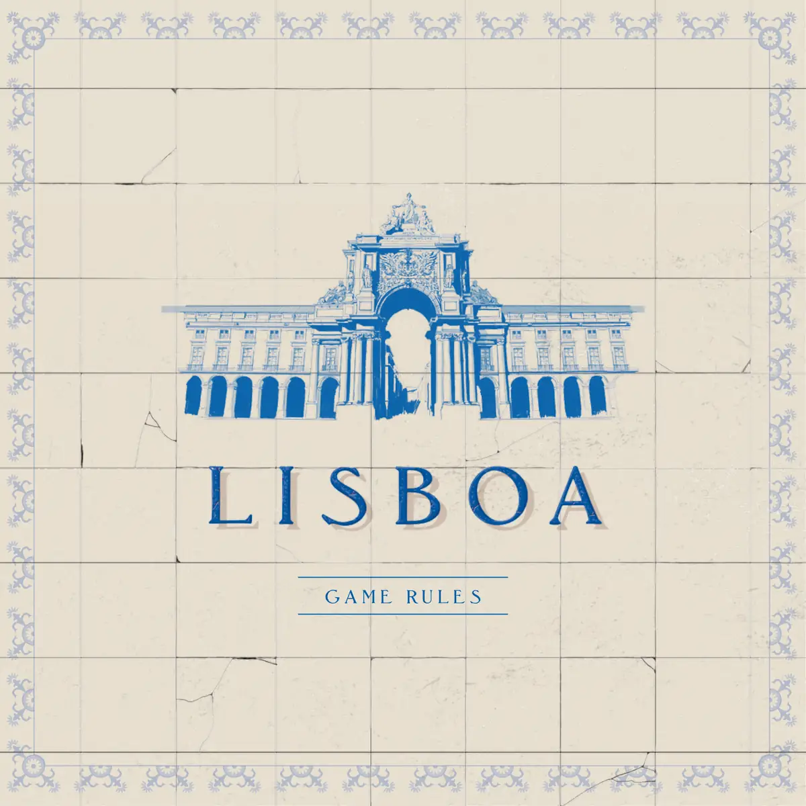
📝 第 1 页 AI 机翻对照（点击展开）
游戏规则
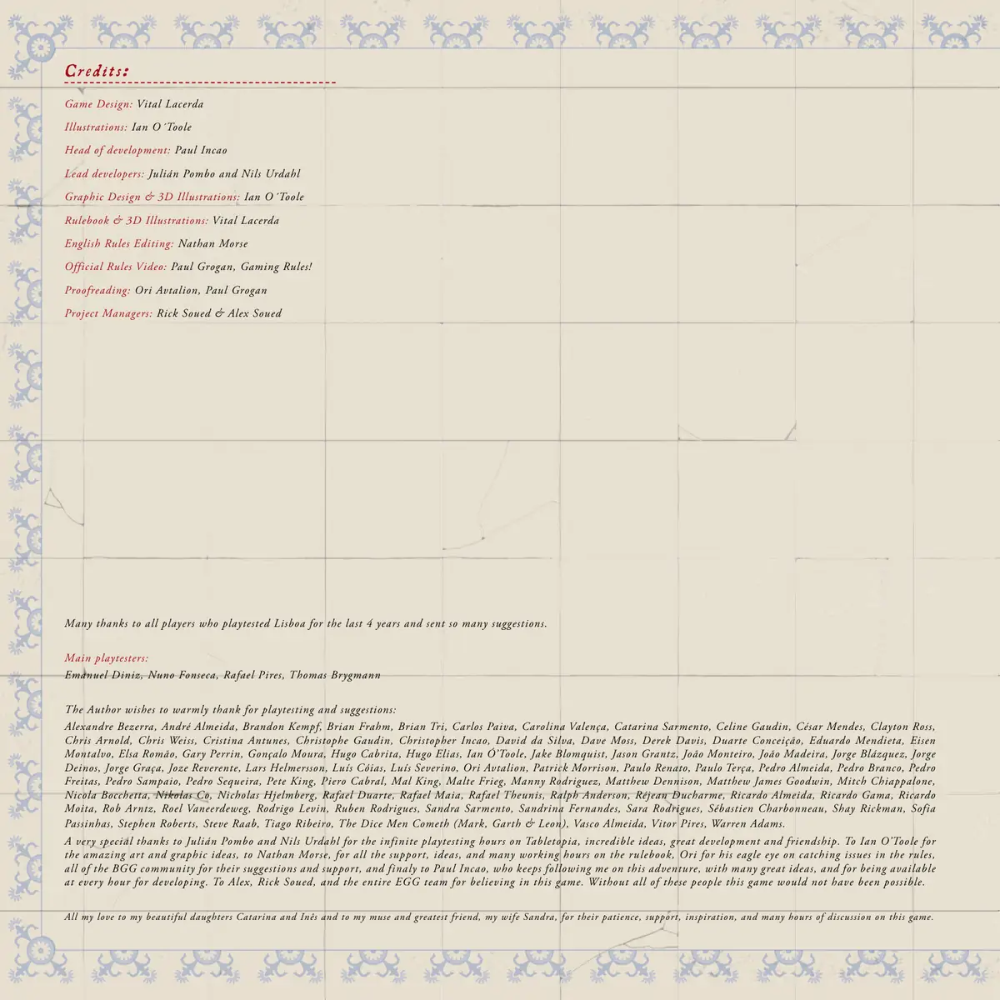
📝 第 2 页 AI 机翻对照（点击展开）
感谢过去4年里所有测试《里斯本》(Lisboa)并提出许多建议的玩家。
主要测试者：
Emanuel Diniz, Nuno Fonseca, Rafael Pires, Thomas Brygmann
作者衷心感谢以下人员的测试和建议：
Alexandre Bezerra, André Almeida, Brandon Kempf, Brian Frahm, Brian Tri, Carlos Paiva, Carolina Valença, Catarina Sarmento, Celine Gaudin, César Mendes, Clayton Ross,
Chris Arnold, Chris Weiss, Cristina Antunes, Christophe Gaudin, Christopher Incao, David da Silva, Dave Moss, Derek Davis, Duarte Conceição, Eduardo Mendieta, Eisen
Montalvo, Elsa Romão, Gary Perrin, Gonçalo Moura, Hugo Cabrita, Hugo Elias, Ian Ó'Toole, Jake Blomquist, Jason Grantz, João Monteiro, João Madeira, Jorge Blázquez, Jorge
Deinos, Jorge Graça, Joze Reverente, Lars Helmersson, Luís Cóias, Luís Severino, Ori Avtalion, Patrick Morrison, Paulo Renato, Paulo Terça, Pedro Almeida, Pedro Branco, Pedro
Freitas, Pedro Sampaio, Pedro Sequeira, Pete King, Piero Cabral, Mal King, Malte Frieg, Manny Rodriguez, Matthew Dennison, Matthew James Goodwin, Mitch Chiappalone,
Nicola Bocchetta, Nikolas Co, Nicholas Hjelmberg, Rafael Duarte, Rafael Maia, Rafael Theunis, Ralph Anderson, Réjean Ducharme, Ricardo Almeida, Ricardo Gama, Ricardo
Moita, Rob Arntz, Roel Vaneerdeweg, Rodrigo Levin, Ruben Rodrigues, Sandra Sarmento, Sandrina Fernandes, Sara Rodrigues, Sébastien Charbonneau, Shay Rickman, Sofia
Passinhas, Stephen Roberts, Steve Raab, Tiago Ribeiro, The Dice Men Cometh (Mark, Garth & Leon), Vasco Almeida, Vitor Pires, Warren Adams.
特别感谢Julián Pombo和Nils Urdahl在Tabletopia上进行的无限测试时间、令人难以置信的想法、出色的开发工作和友谊。感谢Ian O'Toole出色的艺术和图形设计理念，感谢Nathan Morse在规则书上的所有支持、想法和无数工作小时，感谢Ori对规则中问题的敏锐洞察力，感谢BGG社区的所有人提出的建议和支持，最后感谢Paul Incao，他一直伴随着我进行这次冒险，提出了许多伟大的想法，并且在开发过程中随时待命。感谢Alex、Rick Soued以及整个EGG团队对这款游戏的信任。没有这些人，这款游戏不可能实现。
将我全部的爱献给美丽的女儿Catarina和Inês，以及我的缪友和最好的朋友——我的妻子Sandra，感谢她们的耐心、支持、灵感，以及关于这款游戏的无数讨论小时。
制作人员：
游戏设计：Vital Lacerda
插画：Ian O'Toole
开发主管：Paul Incao
主要开发者：Julián Pombo和Nils Urdahl
平面设计与3D插画：Ian O'Toole
规则书与3D插画：Vital Lacerda
英文规则编辑：Nathan Morse
官方规则视频：Paul Grogan，Gaming Rules!
校对：Ori Avtalion, Paul Grogan
项目经理：Rick Soued & Alex Soued
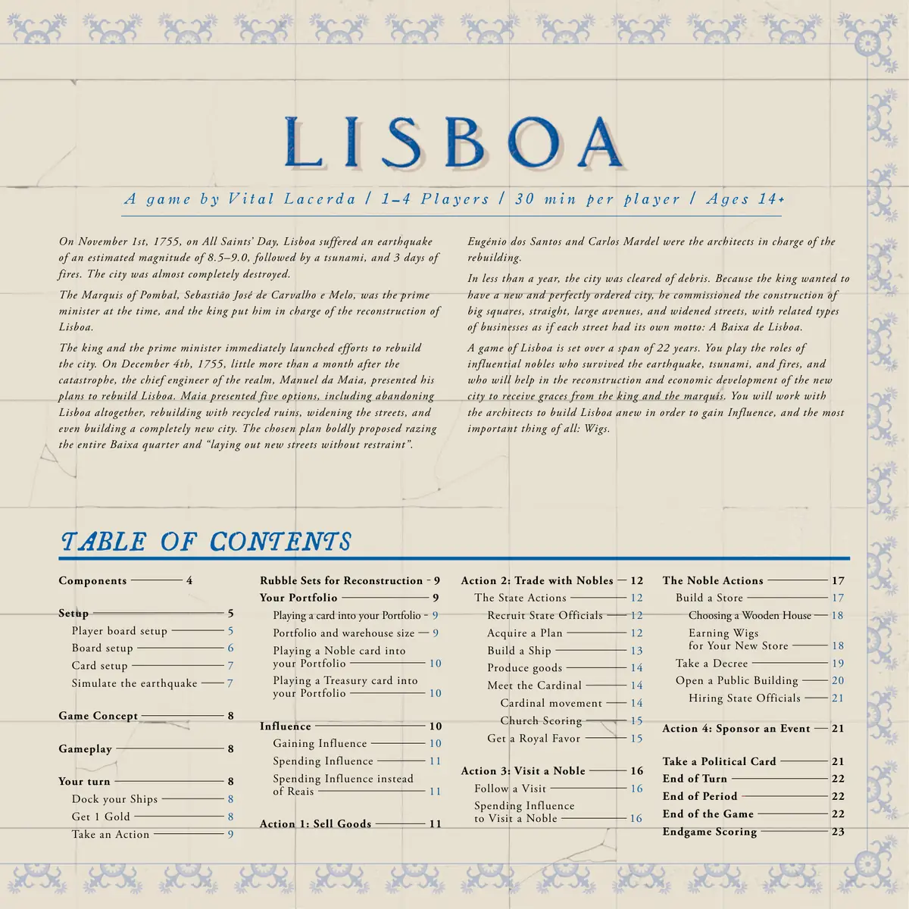
📝 第 3 页 AI 机翻对照（点击展开）
组件
设置
玩家板设置
版图设置
卡牌设置
模拟地震
游戏概念
游戏玩法
你的回合
停靠你的船只
获得1金币
执行一个行动
废墟重建套装 9
你的投资组合
将卡牌放入你的投资组合 9
投资组合和仓库大小 9
将贵族卡牌放入你的投资组合
将国库卡牌放入你的投资组合
影响力
获得影响力
花费影响力
花费影响力而非雷亚尔
行动1：出售商品
行动2：与贵族交易 12
国家行动
招募国家官员
获取一个计划
建造一艘船
生产商品
会见红衣主教
红衣主教移动
教会计分
获得皇家恩宠
行动3：拜访一位贵族
跟随一次拜访
花费影响力拜访一位贵族
贵族行动
建造一座商店
选择一座木制房屋
为你的新商店赚取假发
获取一道法令
开放一座公共建筑
雇佣国家官员
行动4：赞助一个事件
获取一张政治卡牌
回合结束
时期结束
游戏结束
终局计分
1755年11月1日，诸圣节，里斯本遭受了一场估计震级为8.5-9.0的地震，随后是海啸，以及持续3天的大火。城市几乎被完全摧毁。
庞巴尔侯爵塞巴斯蒂昂·何塞·德·卡瓦略·梅洛当时是首相，国王指派他负责里斯本的重建。
国王和首相立即着手重建城市。1755年12月4日，灾难发生仅一个多月后，王国首席工程师曼努埃尔·达·马亚提出了重建里斯本的计划。马亚提出了五个选项，包括完全放弃里斯本、用回收的废墟重建、拓宽街道，甚至是建造一座全新的城市。选定的计划大胆地提议夷平整个拜沙区，"无限制地规划新街道"。
欧热尼奥·多斯·桑托斯和卡洛斯·马尔德尔是负责重建的建筑师。
不到一年，城市就被清理干净了。因为国王想要一座崭新且井然有序的城市，他委托建造了大广场、笔直宽阔的大道和拓宽的街道，相关类型的商业仿佛每条街道都有自己的座右铭：里斯本的拜沙区。
里斯本游戏设定在22年的时间跨度内。你扮演的是在地震、海啸和火灾中幸存下来的有影响力的贵族，你将帮助重建和发展新城市，以获得国王和侯爵的恩宠。你将与建筑师们一起重建里斯本，以获得影响力，以及最重要的事情：假发。
目录
一款由 Vital Lacerda 设计的游戏 / 1-4 名玩家 / 每位玩家 30 分钟 / 适合 14 岁以上
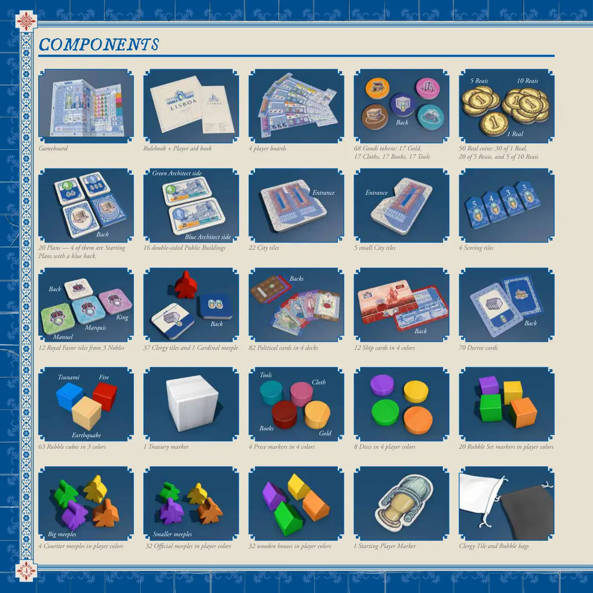
📝 第 4 页 AI 机翻对照（点击展开）
组件
1个起始玩家标记
63个碎石立方体，分3种颜色
12张来自3位贵族的皇家恩惠板块
20张计划牌—其中4张是起始计划牌
背面为蓝色的计划牌
游戏版图
教士板块和碎石袋
1个国库标记
37张教士板块和1位红衣主教米宝
16张双面公共建筑板块
规则书+玩家辅助书
4位玩家颜色的朝臣米宝
4个4种颜色的价格标记
82张政治卡，分4套牌组
22张城市板块
4个玩家版图
32位玩家颜色的官方米宝
8个4种玩家颜色的圆盘
12张4种颜色的船只卡
5张小型城市板块
32位玩家颜色的木制房屋
20位玩家颜色的碎石组标记
70张法令卡
4张计分板块
50枚真金币：30枚1雷亚尔，20枚5雷亚尔，5枚10雷亚尔
68个货物标记：17个金子，17个布料，17本书，17个工具
1雷亚尔
5雷亚尔
背面
10雷亚尔
背面
背面
背面
背面
背面
背面
背面
曼努埃尔
侯爵
国王
工具
布料
金子
书籍
绿色建筑师面
蓝色建筑师面
入口
入口
火灾
海啸
地震
大型米宝
小型米宝
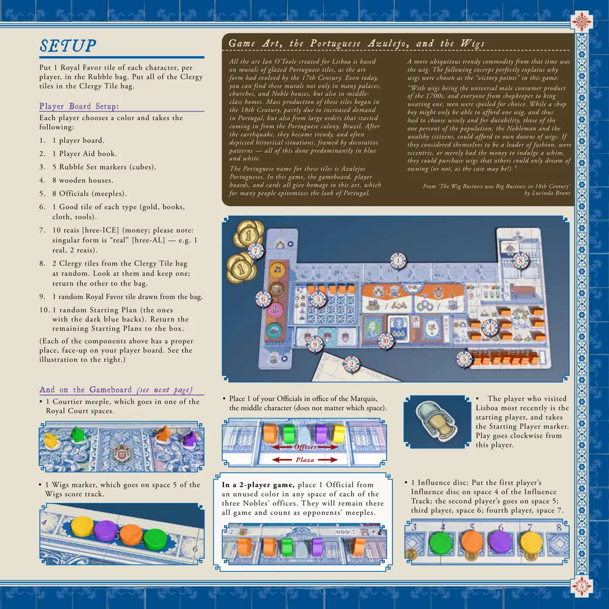
📝 第 5 页 AI 机翻对照（点击展开）
伊恩·奥图尔（Ian O'Toole）为《里斯本》（Lisboa）创作的所有艺术作品都基于17世纪葡萄牙釉面瓷砖壁画的艺术形式演变。即使在今天，你不仅可以在许多宫殿、教堂和贵族宅邸中找到这些壁画，也可以在中产阶级家庭中看到。这些瓷砖的大规模生产始于18世纪，部分原因是葡萄牙国内需求增加，但也来自葡萄牙殖民地巴西开始的大量订单。地震之后，瓷砖变得流行，常常描绘历史场景，周围装饰着装饰图案——所有这些主要用蓝色和白色完成。
这些瓷砖的葡萄牙名称是Azulejos Portugueses。在本游戏中，游戏版图、玩家版图和卡牌都向这种艺术致敬，对许多人来说，这种艺术完美地代表了葡萄牙的外观。
当时更普遍的流行商品是假发。以下摘录完美地解释了为什么选择假发作为本游戏中的"胜利点"：
"假发是18世纪男性的通用消费品，从店主到国王每个人都戴着，男性有丰富的选择。虽然商店里的男孩可能只买得起一顶假发，因此必须明智地选择并注重耐用性，但那百分之一的人口——贵族和富有的市民——可以拥有数十顶假发。如果他们自认为是时尚领袖，性格古怪，或者仅仅有钱可以放纵一时兴起，他们可以购买其他人只能梦想拥有的假发（或者不能，视情况而定！）。"
——摘自露辛达·布兰特（Lucinda Brant）的《18世纪的假发业是大生意》
游戏艺术、葡萄牙瓷砖与假发
设置
将每位玩家对应角色的皇家恩惠板块各1张放入瓦砾袋中。将所有神职人员板块放入神职人员板块袋中。
玩家版图设置：
每位玩家选择一种颜色并拿取以下物品：
- 1张玩家版图。
- 1张玩家辅助卡。
- 5个瓦砾标记（方块）。
- 8个木质房屋。
- 8个官员（米宝）。
- 每种类型（黄金、书籍、布料、工具）各1张商品板块。
- 10雷亚尔[hree-ICE]（货币；请注意：单数形式为"real"[hree-AL]——例如1 real，2 reais）。
- 从神职人员板块袋中随机抽取2张神职人员板块。查看它们并保留1张；将另一张放回袋中。
- 从袋中随机抽取1张皇家恩惠板块。
- 1张随机起始计划（背面为深蓝色的那些）。将剩余的起始计划放回盒中。
（以上每项组件都有其适当位置，正面朝上放在你的玩家版图上。请参见右侧插图。）
在游戏版图上（见下一页）
• 1个朝臣米宝，放在其中一个皇家宫廷区域。
• 1个假发指示物：将其放在假发计分轨道的第5格上。
•
最近访问过里斯本的玩家是起始玩家，并获得起始玩家指示物。
游戏从这个玩家开始，按顺时针方向进行。
• 1个影响力圆盘：将第一名玩家的影响力圆盘放在影响力轨道的第4格上；第二名玩家的放在第5格；第三名玩家，第6格；第四名玩家，第7格。
• 在你的官员中，将1个官员放在侯爵的办公室中，即中间的角色（哪个空间都无所谓）。
在2人游戏中，从未使用的颜色中各放置1个官员在每个贵族办公室的任意空间。它们将留在那里整局游戏，并作为对手的米宝计算。
广场
办公室
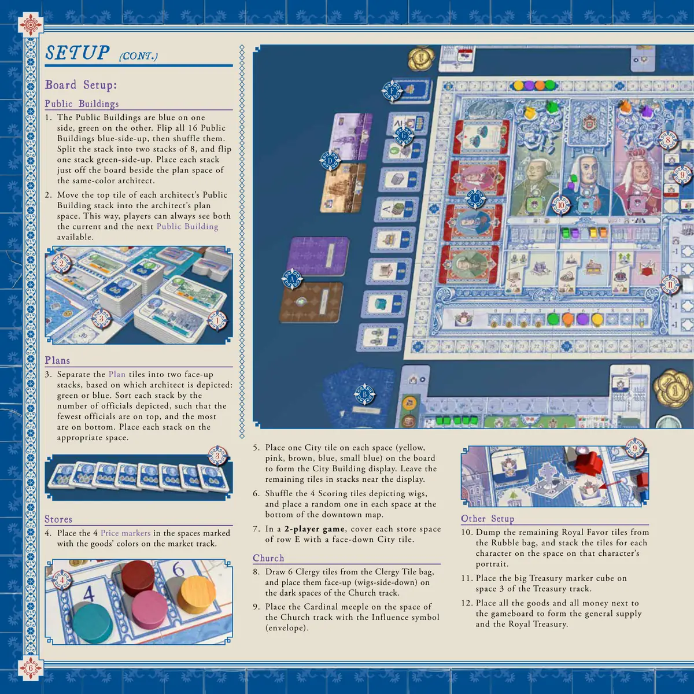
📝 第 6 页 AI 机翻对照（点击展开）
设置（续）
版图设置：
公共建筑
1. 公共建筑一面是蓝色，另一面是绿色。将所有16个公共建筑翻至蓝色面朝上，然后洗牌。将这叠牌分成两叠各8张的牌堆，然后将其中一叠翻至绿色面朝上。将每叠牌放在版图外，相同颜色建筑师计划空间的旁边。
- 将每个建筑师公共建筑牌堆顶端的板块移入该建筑师的计划空间。这样，玩家总能看到当前和下一个可用的公共建筑。
计划
3. 根据描绘的建筑师（绿色或蓝色）将计划板块分成两个正面朝上的牌堆。根据描绘的官员数量对每叠牌进行排序，使官员数量最少的在顶部，最多的在底部。将每叠牌放在相应的空间上。
商店
- 将4个价格标记放在市场轨道上标记有货物颜色的空间中。
- 在版图上的每个空间（黄色、粉色、棕色、蓝色、小蓝色）放置一个城市板块，形成城市建筑展示区。将剩余的板块留在展示区附近的牌堆中。
- 洗混4个描绘假发的计分板块，随机将一个放在市中心地图底部的每个空间中。
- 在2人游戏中，用一张面朝下的城市板块覆盖E行的每个商店空间。
教堂
- 从教士板块袋中抽取6张教士板块，并将它们面朝上（假发面朝下）放在教堂轨道的深色空间上。
9. 将红衣主教米宝放在带有影响力符号（信封）的教堂轨道空间上。
其他设置
10. 将碎石袋中剩余的皇家恩宠牌全部倒出，并将每个角色的牌堆放在该角色肖像所在的空间上。
11. 将大的国库标记立方体放在国库轨道的空间3上。
12. 将所有货物和所有金钱放在游戏板旁边，形成通用供应区和皇家国库。
C
B
G
F
D
A
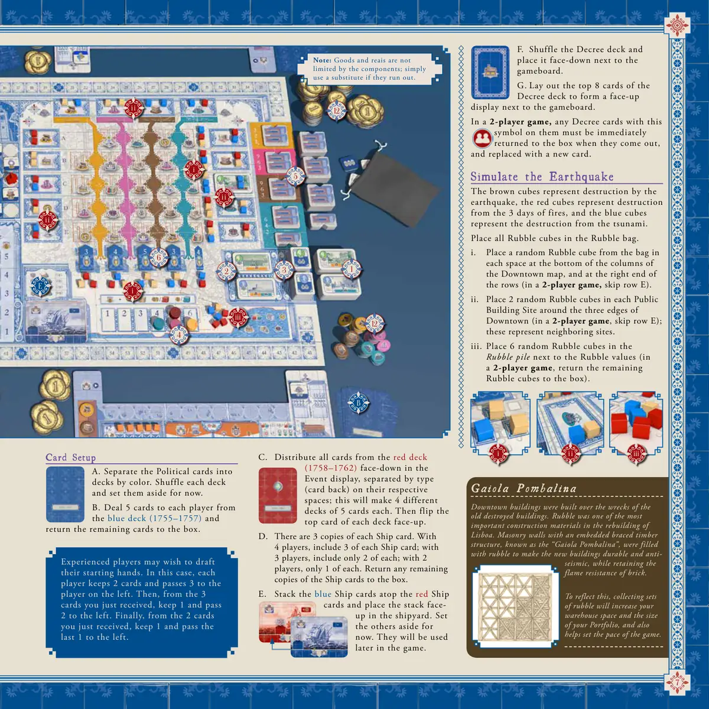
📝 第 7 页 AI 机翻对照（点击展开）
F. 将法令牌库洗牌，并将其面朝下放置在游戏版图旁边。
G. 从法令牌库顶部分出8张牌，面朝上排列在游戏版图旁边形成展示区。
在2人游戏中，当出现带有此符号的法令牌时，必须立即将其放回盒中，并替换为一张新牌。
模拟地震
棕色方块代表地震造成的破坏，红色方块代表三天大火造成的破坏，蓝色方块代表海啸造成的破坏。
将所有碎石方块放入碎石袋中。
i. 从袋中随机取一个碎石方块，放置在市中心地图各列底部以及各行右端的每个格中（在2人游戏中，跳过E行）。
ii. 在市中心三条边缘周围的每个公共建筑工地放置2个随机碎石方块（在2人游戏中，跳过E行）；这些代表邻近的工地。
iii. 在碎石值旁边的碎石堆中放置6个随机碎石方块（在2人游戏中，将剩余的碎石方块放回盒中）。
盖奥拉·庞巴利纳建筑
市中心建筑是在旧被毁建筑的废墟上建造的。碎石是里斯本重建中最重要的建筑材料之一。嵌入支撑木结构的砖石墙，被称为"盖奥拉·庞巴利纳"，用碎石填充，使新建筑具有耐震性，同时保留了砖块的耐火性。
为反映这一点，收集碎石组合将增加你的仓库空间和投资组合的大小，并有助于设定游戏的节奏。
卡牌设置
A. 按颜色将政治牌分成牌库。洗每副牌并将其暂时放在一边。
B. 从蓝色牌库（1755-1757）给每位玩家发5张牌，其余牌放回盒中。
有经验的玩家可能希望选择起始手牌。在这种情况下，每位玩家保留2张牌，将3张牌传给左边的玩家。然后，从你刚收到的3张牌中，保留1张，将2张传给左边。最后，从你刚收到的2张牌中，保留1张，将最后1张传给左边。
C. 将红色牌库（1758-1762）的所有牌面朝下放在事件展示区，按类型（牌背）分别放在各自的格中；这将形成4副各5张牌的不同牌库。然后将每副牌顶部的牌翻面朝上。
D. 每张船牌有3份副本。4人游戏时，包含每种船牌的3份；3人游戏时，只包含每种船牌的2份；2人游戏时，只包含每种船牌的1份。将任何剩余的船牌副本放回盒中。
E. 将蓝色船牌堆放在红色船牌之上，并将这副牌面朝上放在造船厂。将其他牌放在一边。
现在。它们将在游戏后期使用。
i
i
ii
ii
ii
iii
B
i
ii
iii
E
注意：货物和雷亚尔（reais）的数量不受组件限制；如果用完，只需使用替代品即可。
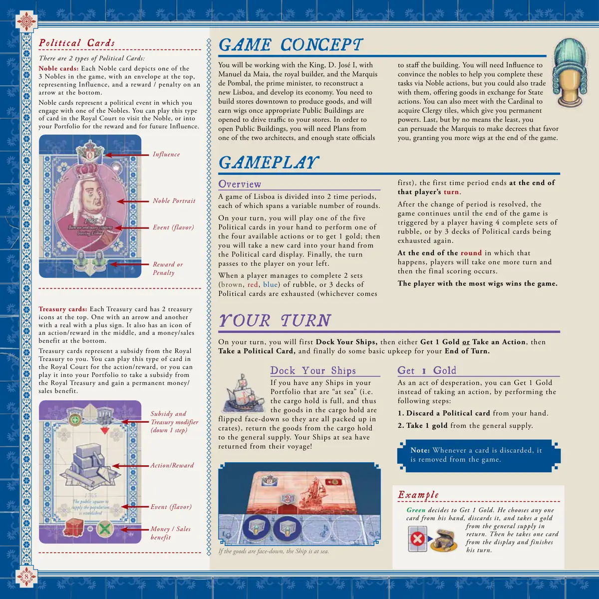
📝 第 8 页 AI 机翻对照（点击展开）
政治卡牌
有2种类型的政治卡牌：
贵族卡牌：每张贵族卡牌描绘了游戏中3位贵族中的一位，顶部有一个信封，代表影响力，底部有一个箭头上的奖励/惩罚。
贵族卡牌代表你与一位贵族参与的政治事件。你可以在皇家法庭打出这种卡牌去拜访贵族，或者将其放入你的投资组合中以获得奖励和未来的影响力。
财库卡牌：每张财库卡牌顶部有2个财库图标。一个带有箭头，另一个带有加号的卷轴。它中间还有一个行动/奖励图标，底部有钱币/销售收益。
财库卡牌代表来自皇家财库的补贴。你可以在皇家法庭打出这种卡牌以获得行动/奖励，或者你可以将其放入你的投资组合中以从皇家财库获得补贴并获得永久性的钱币/销售收益。
停靠你的船只
如果你在你的投资组合中有任何"在海上"的船只（即货舱已满，因此货舱中的货物被翻面朝下，这样它们都被装在箱子里），将货物从货舱返回到公共供应区。你在海上的船只已经完成了它们的航行！
获得1金币
作为绝望之举，你可以通过执行以下步骤来获得1金币而不是执行一个行动：
- 从你的手牌中弃置一张政治卡牌。
- 从公共供应区获得1金币。
注意：每当一张卡牌被弃置时，它会被移出游戏。
示例
绿色玩家决定获得1金币。他从手牌中选择任意一张卡牌，将其弃置，并从公共供应区获得一枚金币作为回报。然后他从展示区抽取一张卡牌并结束他的回合。
你将与国王D. José一世、皇家建筑师Manuel da Maia和首相Marquis de Pombal合作，重建一个新的里斯本，并发展其经济。你需要建造市中心商店来生产商品，一旦合适的公共建筑开放，你将获得假发，以促进商店的客流量。为了开放公共建筑，你需要从两位建筑师之一获得计划，并有足够的国家官员来配备该建筑。你需要影响力来说服贵族通过贵族行动帮助你完成这些任务，但你也可以与他们交易，提供商品以换取国家行动。你还可以与红衣主教会面以获得神职人员板块，这些板块赋予你永久能力。最后，但绝不是最不重要的一点，你可以说服侯爵颁布有利于你的法令，在游戏结束时授予你更多的假发。
游戏概念
游戏玩法
你的回合
在你的回合，你首先要停靠你的船只，然后获得1个金币或执行一个行动，接着获得一张政治卡牌，最后为你的回合结束做一些基本维护。
概述
里斯本的游戏分为2个时间段，
每个时间段包含可变数量的轮次。
在你的回合，你将打出手中的一张政治卡牌来执行四个可用行动之一，或者获得1个金币；然后你将从政治牌展示区获得一张新牌加入手牌。最后，回合传递给你左边的玩家。
当有玩家完成了2组（棕色、红色、蓝色）废墟，或者3个政治卡牌牌库被耗尽（以先发生者为准），第一个时间段在该玩家回合结束时结束。
在时间段变更解决后，游戏继续进行，直到有玩家完成了4组废墟，或者3个政治卡牌牌库再次被耗尽，从而触发游戏结束。
在发生这种情况的那个轮次结束时，玩家将再进行一个回合，然后进行最终计分。
拥有最多假发的玩家赢得游戏。
影响力
贵族肖像
事件（背景）
奖励或
惩罚
行动/奖励
补贴和财库修正器
（下降1步）
事件（背景）
金钱/销售
收益
如果货物是面朝下的，船只则在海上。
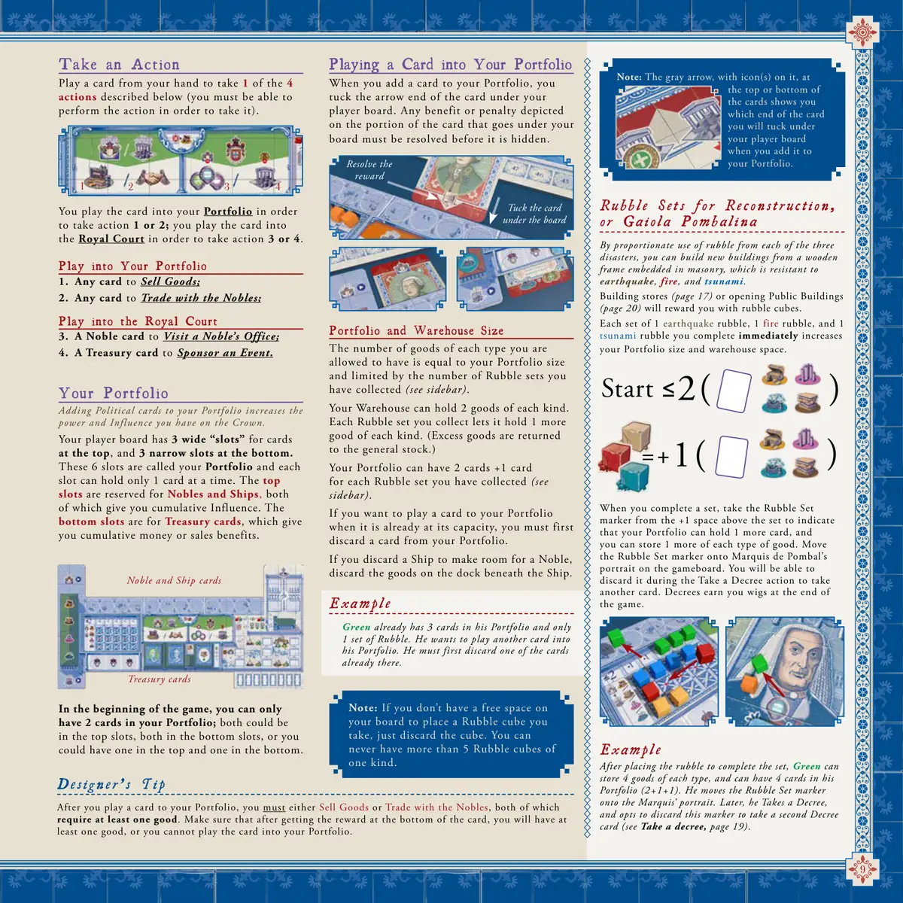
📝 第 9 页 AI 机翻对照（点击展开）
执行行动
从你的手牌中打出一张牌，以执行以下4种行动中的1种（你必须能够执行该行动才能选择它）。
你将牌放入你的投资组合（Portfolio）以执行行动1或2；你将牌放入皇家宫廷（Royal Court）以执行行动3或4。
放入你的投资组合
- 任意一张牌出售商品；
- 任意一张牌与贵族交易；
放入皇家宫廷
- 一张贵族牌拜访贵族办公室；
- 一张国库牌赞助活动。
你的投资组合
将政治牌加入你的投资组合会增加你对王权的影响力。
你的玩家板顶部有3个宽"卡槽"，底部有3个窄卡槽。
这6个卡槽被称为你的投资组合，每个卡槽一次只能容纳1张牌。顶部的卡槽保留给贵族牌和船只牌，这两种牌都能为你提供累积的影响力。底部的卡槽用于国库牌，它们能为你提供累积的资金或销售收益。
游戏开始时，你的投资组合只能有2张牌；两张都可以在顶部卡槽，两张都在底部卡槽，或者你也可以一张在顶部一张在底部。
将牌放入你的投资组合
当你向投资组合添加一张牌时，将牌的箭头端塞入你的玩家板下方。牌上被塞入你板子下方的部分所描绘的任何奖励或惩罚必须在其被隐藏前被解决。
投资组合和仓库大小
每种商品你被允许拥有的数量等于你的投资组合大小，并受你已收集的碎石（Rubble）套数限制（见侧边栏）。
你的仓库每种商品可存放2个。你每收集一套碎石，它就能多存放1个每种商品。（多余的商品返回到公共库存中。）
你的投资组合可以有2张牌 + 你已收集的每套碎石多1张牌（见侧边栏）。
如果你想当投资组合已满时将一张牌放入其中，你必须先从投资组合中弃掉一张牌。
如果你弃掉一张船只为贵族腾出空间，也要弃掉船下方码头上的商品。
示例
格林（Green）的投资组合中已有3张牌，只有1套碎石。他想再向投资组合中打一张牌。他必须先弃掉其中一张已有的牌。
注意：如果你没有空位放置你拿到的碎石方块，就直接弃掉该方块。你永远不能拥有超过5个同类型的碎石方块。
注意：卡片顶部或底部的灰色箭头，带有图标，它告诉你当你将牌添加到投资组合时，应该将牌的哪一端塞入你的玩家板下方。
碎石套用于重建，或盖奥拉·庞巴利纳（Gaio Pombalina）
通过按比例使用来自三种灾难中的碎石，你可以用嵌入砖石结构的木框架建造新建筑，这种建筑能够抵抗地震、火灾和海啸。
建造商店（第17页）或开放公共建筑（第20页）将奖励你获得碎石方块。
每完成一组1块地震碎石、1块火灾碎石和1块海啸碎石，你的投资组合大小和仓库空间将立即增加。
当你完成一组时，从该组上方的+1空间中取出碎石组标记，表明你的投资组合可以多容纳1张卡牌，并且每种类型的货物可以多存储1个。将碎石组标记移动到游戏版图上的庞巴尔侯爵肖像上。你可以在颁布法令行动期间弃置此标记以获取另一张卡牌。法令在游戏结束时为你假发。
示 例
放置碎石完成一组后，绿色玩家可以存储每种类型的4个货物，并且可以在其投资组合中拥有4张卡牌（2+1+1）。他将碎石组标记移动到侯爵的肖像上。后来，他颁布法令，并选择弃置此标记以获取第二张法令卡牌（参见颁布法令，第19页）。
开始 ≤2( )
=+1( )
设计师提示
当你将卡牌 played 到你的投资组合后，你必须销售货物或与贵族交易，这两者都需要至少一个货物。确保在获得卡牌底部的奖励后，你将至少拥有一个货物，否则你不能将卡牌放入你的投资组合。
解决奖励
将卡牌插入版图下方
贵族和船只卡牌
国库卡牌
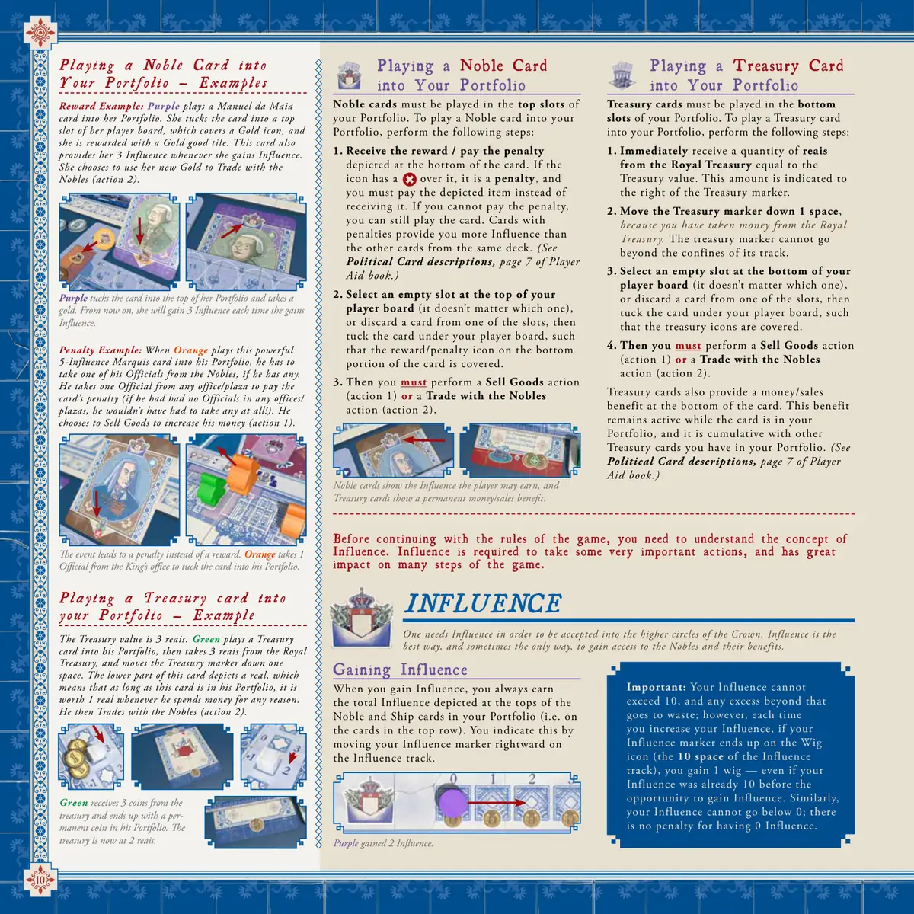
📝 第 10 页 AI 机翻对照（点击展开）
将贵族卡牌放入您的投资组合_示例
奖励示例：紫色玩家将一张Manuel da Maia卡牌放入她的投资组合。她将这张卡牌插入到她玩家版图顶部的槽位中，这覆盖了一个金币图标，她因此获得一个金币资源板块。这张卡牌还为她提供3点影响力，无论何时她获得影响力。她选择使用她的新金币与贵族交易（行动2）。
惩罚示例：当橙色玩家将这张强大的5点影响力侯爵卡牌放入他的投资组合时，他必须从他拥有的贵族官员中取出一名。他从任何官职/广场中取出一名官员来支付这张卡牌的惩罚（如果他在任何官职/广场中都没有官员，他就完全不需要取出任何官员！）。他选择出售商品来增加他的金钱（行动1）。
将国库卡牌放入您的投资组合_示例
国库价值为3雷亚尔。绿色玩家将一张国库卡牌放入他的投资组合，然后从皇家国库中取出3雷亚尔，并将国库标记向下移动一格。这张卡牌的下半部分描绘了一个雷亚尔，这意味着只要这张卡牌在他的投资组合中，无论他为何种原因花钱，它都价值1雷亚尔。然后他与贵族交易（行动2）。
事件导致惩罚而非奖励。橙色玩家从国王的官职中取出1名官员，将卡牌插入他的投资组合。绿色玩家从国库中获得3枚硬币，并在他的投资组合中获得一个永久硬币。国库现在为2雷亚尔。
紫色玩家将卡牌插入到她投资组合的顶部，并获得一个金币。从现在起，每次她获得影响力时，她将获得3点影响力。
将贵族卡牌放入您的投资组合
贵族卡牌必须放入您投资组合的顶部槽位。要将贵族卡牌放入您的投资组合，请执行以下步骤：
1. 接收卡牌底部 depicted 的奖励/支付惩罚。如果图标上有 符号，则这是惩罚，您必须支付所描绘的物品而不是接收它。如果您无法支付惩罚，您仍然可以打出这张卡牌。有惩罚的卡牌为您提供比同一牌库中其他卡牌更多的影响力。（参见政治卡牌描述，玩家辅助手册第7页。）
2. 在您玩家版图顶部的空槽位中选择一个（哪个都无所谓），或者从其中一个槽位弃掉一张卡牌，然后将这张卡牌插入到您的玩家版图下方，使得卡牌下半部分的奖励/惩罚图标被覆盖。
3. 然后您必须执行一个出售商品行动（行动1）或与贵族交易行动（行动2）。
将国库卡牌放入您的投资组合
国库卡牌必须放入您投资组合的底部槽位。要将国库卡牌放入您的投资组合
1. 立即从皇家国库获得相当于国库价值的雷亚尔数量。该金额显示在国库标记的右侧。
- 将国库标记向下移动1格，因为你已经从皇家国库取走了钱。国库标记不能超出其轨道的范围。
3. 在你的玩家版图底部选择一个空位（选择哪个无所谓），或者从某个槽位中弃掉一张卡牌，然后将这张卡牌塞到你的玩家版图下方，使国库图标被覆盖。
4. 然后你必须执行一个出售商品行动（行动1）或与贵族交易行动（行动2）。
国库卡牌在卡牌底部也提供金钱/销售收益。当这张卡牌在你的投资组合中时，该收益保持有效，并且与你投资组合中的其他国库卡牌的收益累积计算。（参见政治卡牌描述，玩家辅助手册第7页。）
在继续游戏规则之前，你需要理解影响力的概念。影响力是执行一些非常重要行动所必需的，并且对游戏的许多步骤都有重大影响。
影响力
要想被王室上层圈子接纳，需要影响力。是获得贵族及其福利的最佳途径，有时甚至是唯一途径。
紫色获得了2点影响力。
获得影响力
当你获得影响力时，你总是能获得你投资组合中贵族卡牌和船只卡牌顶部所示的总影响力（即顶部一行的卡牌）。通过将你的影响力标记在影响力轨道上向右移动来表示这一点。
重要：你的影响力不能超过10，任何超出部分都会被浪费；但是，每次你增加影响力时，如果你的影响力标记最终位于假发图标上（影响力轨道的第10格），你将获得1顶假发——即使在你有机会获得影响力之前，你的影响力已经是10。同样，你的影响力不能低于0；拥有0点影响力没有惩罚。
贵族卡牌显示玩家可能获得的影响力，国库卡牌显示永久金钱/销售收益。
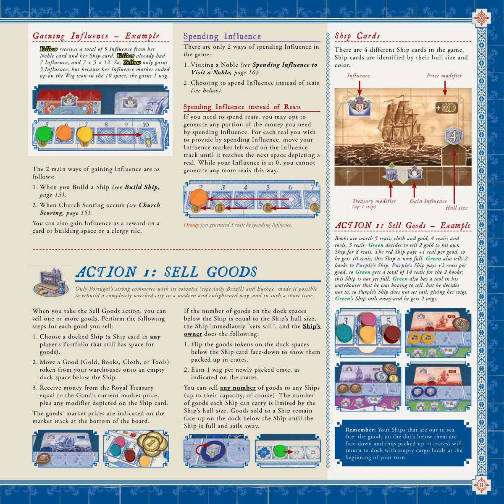
📝 第 11 页 AI 机翻对照（点击展开）
船 卡
游戏中有4种不同的船卡。
船卡通过其船体大小和颜色来识别。
行动1：出售货物 _ 示例
书籍价值5雷亚尔；布匹和黄金，4雷亚尔；工具，3雷亚尔。绿色决定向自己的船出售2黄金，获得8雷亚尔。红色船每件货物多支付1雷亚尔，所以他获得10雷亚尔；这艘船现已满载。绿色还向紫色的船出售2本书。紫色的船每件货物多支付2雷亚尔，所以绿色总共获得14雷亚尔；这艘船尚未满载。绿色在他的仓库中还有一件工具，他原本希望出售，但他决定不出售，所以紫色的船没有起航，给她假发。绿色的船起航，他获得2顶假发。
记住：你出海的船只（即它们下方码头上的货物是面朝下的，因此已装入板条箱）将在你的回合开始时返回空载的码头。
获得影响力 _ 示例
黄色从她的贵族卡和船卡总共获得5点影响力。黄色已经有7点影响力，7 + 5 = 12。所以，黄色只获得3点影响力，但由于她的影响力标记落在了10格的假发图标上，她获得1顶假发。
获得影响力的两种主要方式如下：
- 当你建造一艘船时（见建造船，第13页）。
- 当教堂计分发生时（见教堂计分，第15页）。
你也可以作为卡牌、建筑空间或神职板块上的奖励获得影响力。
花费影响力
游戏中只有两种花费影响力的方式：
- 拜访贵族（见花费影响力拜访贵族，第16页）。
2. 选择花费影响力而非雷亚尔（见下文）。
花费影响力而非雷亚尔
如果你需要花费雷亚尔，你可以选择通过花费影响力来生成所需资金的任何部分。对于你希望通过花费影响力提供的每1雷亚尔，将你的影响力标记在影响力轨道上向左移动，直到到达下一个描绘雷亚尔的格子。当你的影响力为0时，你不能通过这种方式再生成雷亚尔。
行动1：出售货物
只有葡萄牙与其殖民地（尤其是巴西）和欧洲的强大贸易，才有可能以现代和开明的方式在如此短的时间内重建一个完全被摧毁的城市。
橙色刚刚通过花费影响力生成了3雷亚尔。
当你执行出售货物行动时，你可以出售一件或多件货物。对你出售的每件货物执行以下步骤：
- 选择一艘停泊的船（任何玩家投资组合中仍有货物空间的船卡）。
- 将一件货物（黄金、书籍、布匹或工具）指示物从你的仓库移到船下方的一个空码头格上。
3. 从皇家国库获得金钱
等于当前商品的市场价格，
加上飞船卡上显示的任何修正值。
商品的市场价格显示在
版图底部的市场轨道上。
如果飞船下方的码头空间上的商品数量
等于飞船的船体容量，
飞船立即"启航"，飞船的所有者执行以下操作：
1. 将飞船卡下方码头空间上的商品指示物翻转为面朝下，
表示它们已被装入板条箱中。
- 根据板条箱上显示的数量，
为每个新装入的板条箱赚取1个威格。
你可以向任何飞船出售任意数量的商品
（当然，不超过其容量）。
每艘飞船可运载的商品数量受限于飞船的船体容量。
出售给飞船的商品保持面朝上放在飞船下方的码头上，
直到飞船满载并启航离去。
影响力
价格修正值
获得影响力
船体容量
国库修正值
（上升1步）
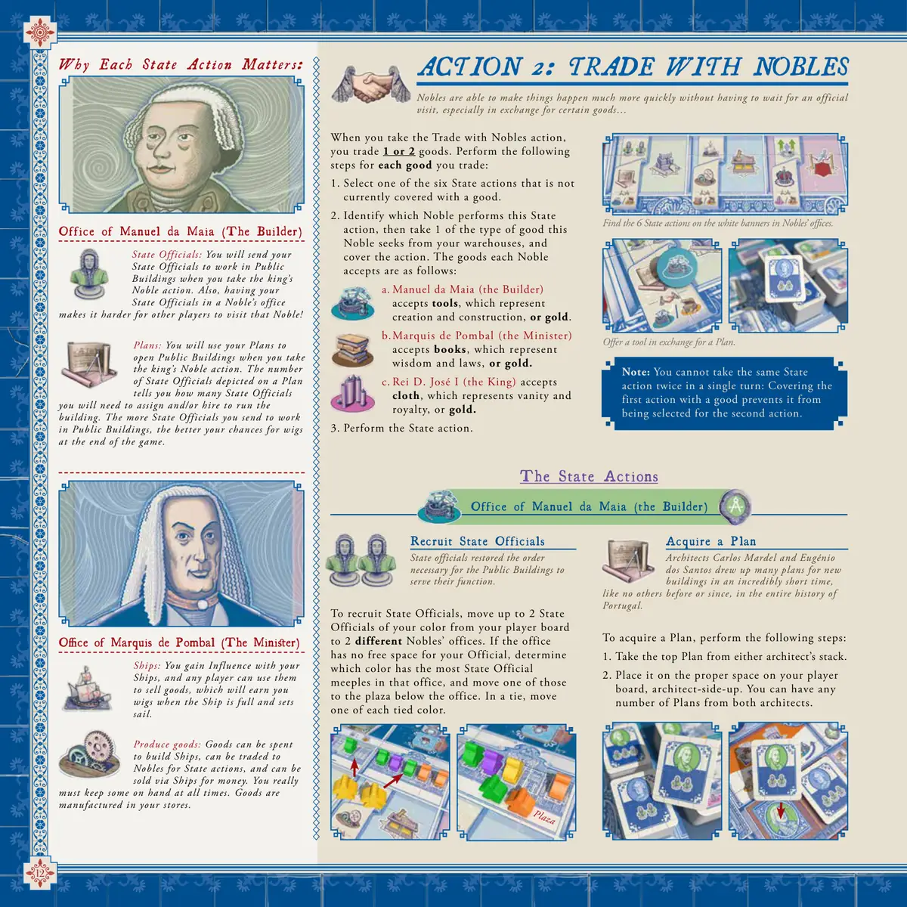
📝 第 12 页 AI 机翻对照（点击展开）
为何每项国家行动都很重要：
曼努埃尔·达·马亚（建筑师）的办公室
国家官员：当你执行国王的贵族行动时，你将把你的国家官员派往公共建筑工作。此外，让你的国家官员在贵族的办公室里，会使其他玩家更难拜访该贵族！
计划：当你执行国王的贵族行动时，你将使用你的计划来开放公共建筑。计划上描绘的国家官员数量告诉你需要分配和/或雇佣多少国家官员来运营该建筑。派往公共建筑工作的国家官员越多，你在游戏结束时获得假发的机会就越大。
马奎斯·德·庞巴尔（部长）的办公室
船只：你通过你的船只获得影响力，任何玩家都可以使用它们来出售货物，当船只满载并起航时，这将为你赚取假发。
生产货物：货物可以用来建造船只，可以与贵族交易以获得国家行动，也可以通过船只出售以换取金钱。你真的必须随时保留一些货物。货物在你的商店中制造。
当你执行与贵族交易行动时，你交易1或2件货物。对你交易的每件货物执行以下步骤：
1. 选择六个未被货物覆盖的国家行动之一。
2. 确定执行该国家行动的贵族，然后从你的仓库中取出该贵族所寻求的1件相应货物，并覆盖该行动。每位贵族接受的货物如下：
a. 曼努埃尔·达·马亚（建筑师）接受代表创造和建设的工具，或黄金。
b. 马奎斯·德·庞巴尔（部长）接受代表智慧和法律的书籍，或黄金。
c. 若泽一世国王（国王）接受代表虚荣和皇权的布料，或黄金。
- 执行国家行动。
注意：你不能在同一回合内执行两次相同的国家行动：用货物覆盖第一个行动可以防止它被第二次选择。
招募国家官员
国家官员恢复了公共建筑履行其功能所需的秩序。
要招募国家官员，将你玩家版图上最多2个你颜色的国家官员移动到2个不同贵族的办公室。如果该办公室没有你官员的空位，确定该办公室中哪种颜色的国家官员米宝最多，并将其中一个移至办公室下方的广场。如果平局，则移动每种平局颜色的一个。
获取计划
建筑师卡洛斯·马德尔和欧热尼奥·多斯桑托斯在极短的时间内为新建筑绘制了许多计划，这在葡萄牙历史上前所未有，也后无来者。
要获取计划，执行以下步骤：
- 从任一建筑师的牌堆中取顶部的计划。
2. 将其放置在你的玩家版图上，建筑师面朝上。你可以拥有来自两位建筑师的任意数量的计划。
曼努埃尔·达·马亚（建筑师）的国家行动办公室
行动2：与贵族交易
贵族无需等待官方访问就能更快地促成事情，特别是以换取某些商品为条件...
广场
在贵族办公室的白色横幅上找到6个国家行动。
提供一件工具以换取一张计划。
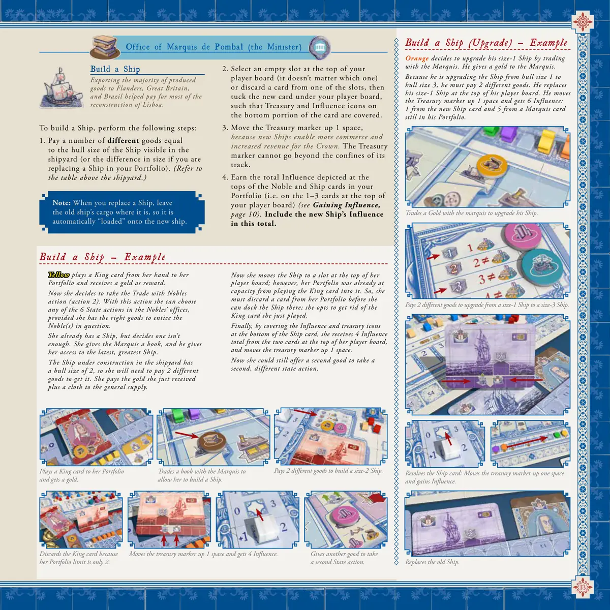
📝 第 13 页 AI 机翻对照（点击展开）
将一张国王卡牌放入她的投资组合并获得一枚金币。
支付2种不同的货物来建造一艘尺寸为2的船只。
将国库标记向上移动1格并获得4点影响力。
与侯爵交换一本书以允许她建造一艘船只。
解决船只卡牌：将国库标记向上移动1格并获得影响力。
因为她的投资组合上限只有2，所以弃置国王卡牌。
给予另一件货物以执行第二次国家行动。
建造一艘船只（升级）_ 示例
橙色决定通过与侯爵交易来升级他尺寸为1的船只。他给侯爵一枚金币。因为他要将船只从船体尺寸1升级到船体尺寸3，他必须支付2种不同的货物。他将他尺寸为1的船只替换为他玩家版图顶部的船只。他将国库标记向上移动1格并获得6点影响力：来自新船只卡牌的1点和来自他投资组合中仍有的侯爵卡牌的5点。
建造一艘船只
将大部分生产货物出口到佛兰德、英国和巴西，帮助支付了里斯本重建的大部分费用。
要建造一艘船只，请执行以下步骤：
1. 支付与造船厂中可见船只船体尺寸相等的不同货物数量（或者如果你要替换投资组合中的船只，则支付尺寸差数）。（请参考造船厂上方的表格。）
注意：当你替换船只时，将旧船的货物留在原处，这样它会自动"装载"到新船上。
2. 在你玩家版图顶部选择一个空位（哪个位置都无所谓）或者从其中一个格位弃置一张卡牌，然后将新卡牌塞入你的玩家版图下方，使得卡牌底部的国库和影响力图标被覆盖。
- 将国库标记向上移动1格，因为新船只促进了更多商业并为王室增加了收入。国库标记不能超出其轨道的限制。
4. 赢得你投资组合中贵族和船只卡牌顶部所示的总影响力（即在你玩家版图顶部的1-3张卡牌上）（参见获得影响力，第10页）。将新船只的影响力计入此总数。
黄色从她的手牌中打出一张国王卡牌到她的投资组合并获得一枚金币作为奖励。
现在她决定执行与贵族交易行动（行动2）。通过这个行动，她可以选择贵族办公室中的任何6项国家行动，前提是她有合适的货物来吸引相关的贵族。
她已经有一艘船只，但决定一艘不够。她给侯爵一本书，侯爵则让她获得最新、最伟大的船只。
造船厂中正在建造的船只船体尺寸为2，所以她需要支付2种不同的货物来获得它。她将她刚刚获得的金币加上一块布支付给公共供应区。
现在她将飞船移动到她玩家版图顶部的槽位；然而，她的投资组合（Portfolio）已经因为将国王卡牌放入其中而达到容量。因此，她必须从投资组合中弃掉一张卡牌，才能将飞船停泊在那里；她选择弃掉刚刚打出的国王卡牌。
最后，通过覆盖飞船卡牌底部的威望（Influence）和国库（treasury）图标，她从玩家版图顶部的两张卡牌总共获得4点威望，并将国库指示物向上移动1格。
现在她仍然可以提供第二种商品来执行第二个不同的国家行动。
侯爵·德·庞巴尔办公室（the Minister）
建造飞船 _ 示例
替换旧飞船。
与侯爵交易1个金币（Gold）来升级他的飞船。
支付2种不同的商品，将1级飞船升级为3级飞船。
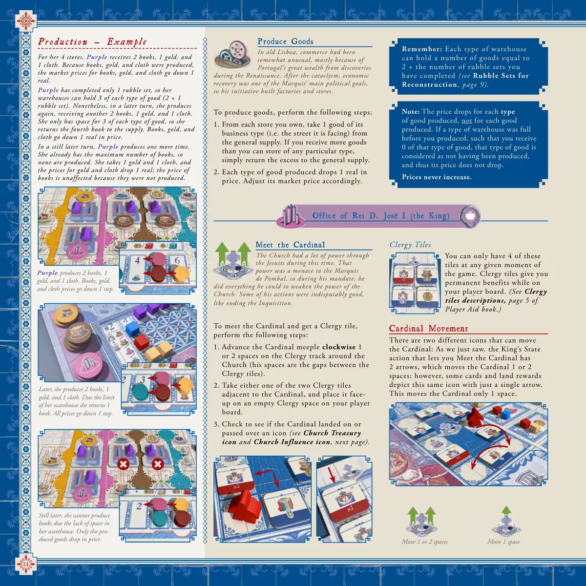
📝 第 14 页 AI 机翻对照（点击展开）
认识红衣主教
在这段时间里，耶稣会教会拥有很大的权力。这种权力对庞巴尔侯爵（Marquis de Pombal）构成威胁，因此在他任职期间，他尽一切努力削弱教会的权力。他的一些行动无疑是好的，比如结束了宗教裁判所。
要认识红衣主教并获得一张神职人员板块，请执行以下步骤：
- 将红衣主教米宝在教会周围的教职轨道上顺时针前进1或2格（他的位置位于神职人员板块之间的空隙中）。
2. 取红衣主教相邻的两张神职人员板块中的任意一张，并将其正面朝上放置在你玩家版图上的一个空的神职人员区域。
3. 检查红衣主教是否落在或经过了一个图标（参见教会金库图标和教会影响力图标，下一页）。
神职人员板块
在游戏的任何时刻，你最多只能拥有4张这类板块。神职人员板块在你玩家版图上时为你提供永久性好处。（参见神职人员板块描述，玩家辅助手册第5页。）
红衣主教移动
有两种不同的图标可以移动红衣主教：正如我们刚刚看到的，国王的国家行动让你可以"认识红衣主教"，该行动有2个箭头，将红衣主教移动1或2格；然而，一些卡牌和土地奖励显示的相同图标只有一个箭头。这只会将红衣主教移动1格。
紫色产出2本书、1金和1布。书、金和布的价格下降1步。
移动1或2格
移动1格
后来，她产出2本书、1金和1布。由于她仓库的限制，她退回1本书。所有价格下降1步。
再后来，由于仓库空间不足，她无法生产书籍。只有产出的商品价格下降。
生产示例
紫色拥有4个商店，获得2本书、1金和1布。由于书、金和布都被生产了，书、金和布的市场价格各下降1个里尔。
紫色只完成了1套碎石组，因此她的仓库每种商品可容纳3个（2+1碎石组）。尽管如此，在之后的回合中，她再次生产，又获得2本书、1金和1布。她每种商品只有3个空间，因此她将第四本书退回供应池。书、金和布的价格各下降1个里尔。
在更晚的一个回合中，紫色再次生产一次。她已经拥有最大数量的书籍，因此没有书籍被生产。她拿取1金和1布，金和布的价格各下降1个里尔；书籍价格不受影响，因为它们没有被生产。
生产商品
在旧里斯本，商业 somewhat 不寻常，主要是因为葡萄牙在文艺复兴时期因发现而获得的巨大财富。在灾难之后，经济
复苏是侯爵的主要政治目标之一，
因此他的倡议建立了工厂和商店。
要生产商品，请执行以下步骤：
- 从你拥有的每家商店中，从通用供应区取出1个与其商业类型（即它所面向的街道）相符的商品。如果你获得的某种商品数量超过了你的存储能力，只需将多余的部分返还到通用供应区。
- 每种生产的商品类型价格下降1里尔。相应地调整其市场价格。
记住：每种仓库可以容纳的商品数量等于2加上你已完成的瓦砾套组数量（参见"用于重建的瓦砾套组"，第9页）。
注意：价格下降针对的是每种生产的商品类型，而不是每种生产的商品。如果在生产前某种仓库已满，导致你无法获得该类型的商品，则该类型的商品被视为未被生产，因此其价格不会下降。
价格永远不会上涨。
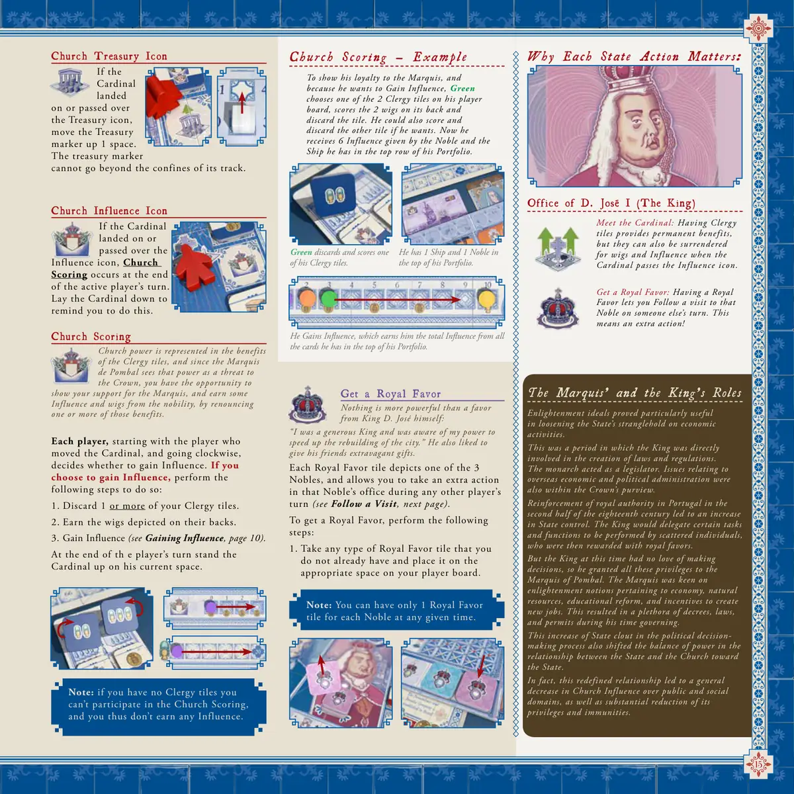
📝 第 15 页 AI 机翻对照（点击展开）
他获得影响力，这为他赚取其投资组合顶部所有卡牌的总影响力值。
为何每个国家行动都很重要：
D.何塞一世（国王）的官职
会见红衣主教：拥有神职板块提供永久性收益，但当红衣主教经过影响力图标时，这些板块也可以被放弃以换取假发和影响力。
获得皇家恩宠：拥有皇家恩宠让你可以在他人回合中跟随对该贵族的拜访。这意味着额外的行动！
侯爵和国王的角色
启蒙思想在削弱国家对经济活动的控制方面特别有用。
这是一个国王直接参与法律法规制定的时期。君主扮演立法者的角色。与海外经济和政治管理相关的事务也属于王权的范畴。
十八世纪下半叶葡萄牙王室权威的加强导致国家控制的增加。国王会将某些任务和职能委托给分散的个人执行，这些人随后会获得皇家恩宠作为奖励。
但当时的国王不喜欢做决定，所以他将所有这些特权都授予了庞巴尔侯爵。侯爵热衷于与经济、自然资源、教育改革以及创造新工作岗位激励相关的启蒙理念。这导致在他执政期间颁布了大量法令、法律和许可证。
国家力量在政治决策过程中增加，也改变了国家与教会之间关系的权力平衡，向国家一方倾斜。
事实上，这种重新定义的关系导致教会对社会公共和社会领域的影响力普遍下降，以及其特权和豁免权的实质性减少。
教会国库图标
如果红衣主教
落在或经过
国库图标，
将国库标记
向上移动1格。
国库标记
不能超出其轨道范围。
教会影响力图标
如果红衣主教
落在或经过
影响力图标，教会
计分在当前玩家回合结束时进行。
将红衣主教卡片放下以提醒你执行此操作。
教会计分
教会权力体现在神职板块的收益中，由于庞巴尔侯爵认为这种权力对王权构成威胁，你可以通过放弃一个或多个这些收益来展示对侯爵的支持，从而从贵族那里获得一些影响力和假发。
每位玩家，从移动红衣主教的玩家开始，顺时针方向，决定是否要获得影响力。如果你选择获得影响力，请执行以下步骤：
教堂计分
- 弃置1张或更多你的教士板块。
- 获得它们背面 depicted 的假发。
- 获得影响力（参见获得影响力，第10页）。
在玩家回合结束时，将红衣主教立在他当前所在的格上。
注意：如果你没有教士板块，你不能参与教堂计分，因此你不会获得任何影响力。
教堂计分 _ 示例
为了向侯爵表示忠诚，并且因为他想获得影响力，绿色玩家选择他玩家版图上的2张教士板块中的1张，计分其背面的2个假发并弃置该板块。如果他愿意，他也可以计分并弃置另一张板块。现在他获得由他投资组合顶部行中的贵族和船只给予的6点影响力。
获得皇家恩宠
没有什么比来自D. José国王本人的恩宠更有力量了：
"我是一位慷慨的国王，并且我知道我加快城市重建的力量。"他也喜欢给他的朋友送奢侈的礼物。
每张皇家恩宠板块描绘了3位贵族中的1位，并允许你在任何其他玩家的回合期间在该贵族的办公室中执行一个额外行动（参见跟随访问，下一页）。
要获得皇家恩宠，执行以下步骤：
1. 拿取你尚未拥有的任何类型的皇家恩宠板块，并将其放置在你的玩家版图上的相应空间上。
注意：在任何给定时间，每位贵族你只能拥有1张皇家恩宠板块。
他有1艘船和1位贵族在他的投资组合顶部。
绿色玩家弃置并计分他的一张教士板块。
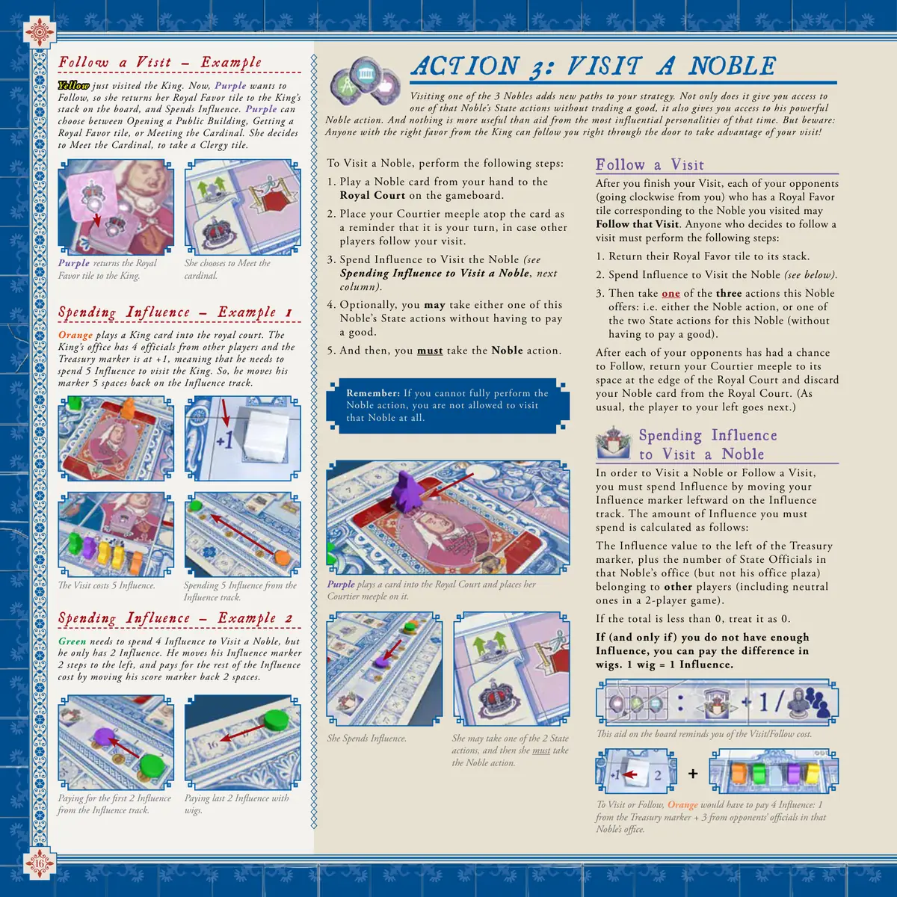
📝 第 16 页 AI 机翻对照（点击展开）
紫色玩家将一张卡牌放入皇家宫廷，并将她的朝臣米宝放置在上面。
她消耗影响力。
她可以选择两个国家行动中的一个，然后她必须执行贵族行动。
跟随拜访_示例
黄色玩家刚刚拜访了国王。现在，紫色玩家想要跟随，因此她将她的皇家恩惠板块归还给版图上的国王堆叠，并消耗影响力。紫色玩家可以选择开设公共建筑、获得皇家恩惠板块或与红衣主教会面。她决定与红衣主教会面，以获得一个教士板块。
消耗影响力_示例 1
橙色玩家将一张国王卡牌放入皇家宫廷。国王的职位有4名来自其他玩家的官员，并且国库标记在+1位置，这意味着他需要消耗5点影响力才能拜访国王。因此，他将他的影响力标记在影响力轨道上向后移动5格。
消耗影响力_示例 2
绿色玩家需要消耗4点影响力来拜访一位贵族，但他只有2点影响力。他将他的影响力标记向左移动2步，并通过将他的分数标记向后移动2格来支付剩余的影响力成本。
紫色玩家将皇家恩惠板块归还给国王。
这次拜访需要5点影响力。
她选择与红衣主教会面。
从影响力轨道上消耗5点影响力。
要拜访或跟随，橙色玩家需要支付4点影响力：1点来自国库标记+3点来自该贵族职位上对手的官员。
版图上的这个提示提醒你拜访/跟随的成本。
+
要拜访一位贵族，执行以下步骤：
1. 从你的手牌中打出一张贵族卡牌到版图上的皇家宫廷。
2. 将你的朝臣米宝放置在卡牌顶部，作为这是你回合的提醒，以防其他玩家跟随你的拜访。
- 消耗影响力来拜访这位贵族（参见下一栏的"消耗影响力来拜访一位贵族"）。
4. 可选地，你可以选择这位贵族的一个国家行动，而无需支付任何商品。
- 然后，你必须执行贵族行动。
记住：如果你无法完全执行贵族行动，你完全不被允许拜访那位贵族。
跟随拜访
在你完成你的拜访后，每位对手（从你开始顺时针方向）拥有与你拜访的贵族相对应的皇家恩惠板块，可以跟随这次拜访。任何决定跟随拜访的玩家必须执行以下步骤：
- 将他们的皇家恩惠板块归还到其堆叠中。
- 消耗影响力来拜访这位贵族（见下文）。
3. 然后选择这位贵族提供的三个行动之一：即贵族行动，或这位贵族的两个国家行动之一（无需支付商品）。
在每位对手都有机会跟随之后，将你的朝臣米宝归还到皇家宫廷边缘的它的位置，并弃置
行动3：拜访贵族
拜访3位贵族中的任意一位都会为你的策略增添新的路径。它不仅让你无需交易商品就能获得该贵族的国家行动，还能让你获得他强大的贵族行动。没有什么比得到当时最具影响力人物的援助更有用了。但要小心：
任何拥有国王适当恩宠的人都可以紧随你穿过大门，利用你的拜访！
从影响力轨道上支付前2点影响力。
使用假发支付最后2点影响力。
📝 第 17 页 AI 机翻对照（点击展开）
建造商店_示例
紫色从展示区的书籍（棕色）空间中选择城市板块，因此该板块必须面向Rua Nova da Princesa（棕色街道）。在从所选空间的行或列中取走一个碎石立方体，获得该空间的奖励并支付土地费用后，紫色将新的城市板块放置如下所示，然后将一个木质房屋从她的玩家板块移到新的城市板块上，标记该商店为她所有。
曼努埃尔·达·马亚（建筑师）
建造商店
要建造商店，你必须执行以下步骤：
- 从展示区选择一个可用的城市板块。你取走板块的空间决定了商店将经营的生意类型，以及其入口（凹槽）必须面向的街道。
2. 选择一个与步骤1中生意颜色相匹配的、紧邻该街道的空地空间。
3. 获得地面上描绘的奖励，然后将城市板块放置在该空间上，其入口面向相应的街道。
- 从该空间的行或列中取走1个碎石立方体（如果有任何），并将其放在你玩家板块上最左边的匹配空位上（如果没有空间，则将该立方体移出游戏）。
- 用雷亚尔支付土地费用（参见右侧的"计算土地价格"）。
6. 将一个木质房屋从你的玩家板块移到城市板块上，靠近入口（参见"选择哪个木质房屋"，第18页）。
- 因建造商店而获得假发（参见"为新商店获得假发"，第18页）。
注意：在你的回合开始时，可用的城市板块展示区每个空间上都会有一块板块。大型城市板块建造在市中心的空间上。小型城市板块建造在网格最右侧的细长列上的半尺寸空间上。
设计师注：大型城市建筑和小型建筑之间没有任何区别。我只是想保持里斯本原始城市计划的完整性。
计算土地价格
你希望在其上建造的土地空间的价格等于国库标记右侧的当前国库价值，加上城市地图中该土地空间所在列和行中所有剩余碎石立方体的总成本（不包括公共建筑空间）。
碎石成本如下：
地震（棕色）碎石成本为3雷亚尔。
火灾（红色）碎石成本为2雷亚尔。
海啸（蓝色）碎石成本为1雷亚尔。
注意：请务必检查你投资组合中的国库卡和玩家板块上的神职人员板块，以获取适用的金钱或销售优惠！
购买土地_示例
黄色正在E行建造一家书店，她已经获得了该空间的奖励。在取走碎石立方体之前，这块土地将花费15雷亚尔：3雷亚尔（因为国库标记在3上）+ 9
雷亚尔（3个地震废墟方块 × 3雷亚尔）+ 3
雷亚尔（3个海啸废墟方块 × 1雷亚尔）。
黄色玩家拿走一个地震废墟方块，
这不仅帮助她组成一套废墟，
还使她的土地成本降低了3雷亚尔。最终土地成本将是12雷亚尔。
她检查了自己的投资组合和玩家板，寻找任何金钱优惠，但没有找到。
板上的这个援助提醒你废墟的成本。
右侧有3个棕色方块（9雷亚尔）。
国库显示3雷亚尔。
列的底部有3个蓝色方块（3雷亚尔）。
她拿走一个棕色方块来降低3雷亚尔的成本。
贵族行动
为土地支付雷亚尔。
从所选空间的行或列中拿走一个废墟。
从展示区中拿取一张城市板块，颜色自选。
在入口旁边的建筑上放置一个木制房屋。
从土地空间获得奖励，并将板块面向正确的街道放置。
选择一个与同色街道相邻的空间。
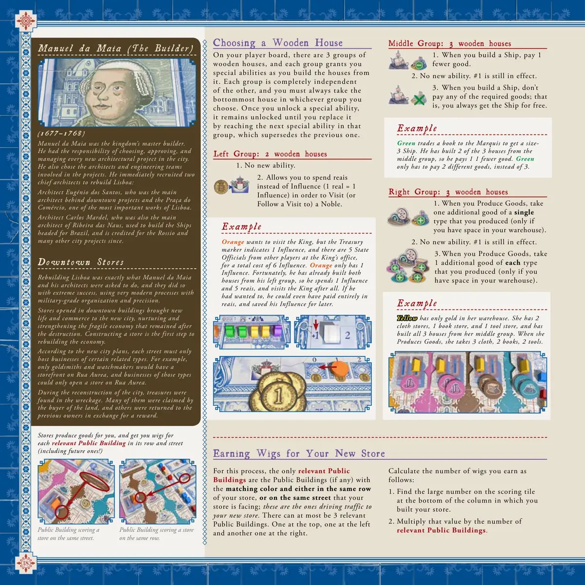
📝 第 18 页 AI 机翻对照（点击展开）
选择木质房屋
在你的玩家版图上，有3组木质房屋，每组房屋在你从中建造时都会赋予你特殊能力。每组房屋完全独立于其他组，你必须始终选择你所选组中最底部的房屋。一旦你解锁了一个特殊能力，它将保持解锁状态，直到你通过达到该组中的下一个特殊能力来替换它，后者会取代前一个能力。
左组：2栋木质房屋
- 没有新能力。
2. 允许你使用雷亚尔(Reais)代替影响力(Influence)来拜访（或跟随拜访）一位贵族（1雷亚尔=1影响力）。
示 例
橙色玩家想拜访国王，但国库标记显示需要1影响力，且国王办公室有来自其他玩家的5位政府官员，总成本为6影响力。橙色玩家只有1影响力。幸运的是，他已经建造了左组中的两栋房屋，因此他花费1影响力和5雷亚尔，最终成功拜访了国王。如果他愿意，他甚至可以完全用雷亚尔支付，将影响力留到以后使用。
中组：3栋木质房屋
- 当你建造一艘船时，少支付1种货物。
- 没有新能力。#1仍然有效。
- 当你建造一艘船时，无需支付任何所需货物；也就是说，你总是能免费获得这艘船。
示 例
绿色玩家用一本书向侯爵换取一艘3级船。他已经建造了中组中的3栋房屋中的2栋，因此他少支付1种货物。绿色玩家只需支付2种不同的货物，而不是3种。
右组：3栋木质房屋
1. 当你生产货物时，额外获得1件你所生产的单一类型货物（仅当你的仓库有空间时）。
- 没有新能力。#1仍然有效。
3. 当你生产货物时，额外获得1件你所生产的每种类型货物（仅当你的仓库有空间时）。
示 例
黄色玩家的仓库中只有黄金。她有2家布料店、1家书店和1家工具店，并且已经建造了她中组的全部3栋房屋。当她生产货物时，她获得3件布料、2本书和2件工具。
对于此过程，唯一相关的公共建筑是那些具有匹配颜色且位于你商店同一行或你商店所面对的同一条街道上的公共建筑（如果有）；这些是为你新商店带来客流的相关建筑。最多可以有3个相关的公共建筑。一个在顶部，一个在左侧，另一个在右侧。
按照以下方式计算你获得的假发数量：
1. 找到你建造商店所在列底部的计分板块上的大数字。
2. 将该数值乘以相关公共建筑的数量。
为新商店赚取假发
Manuel da Maia (The Builder)
(1677-1768)
Manuel da Maia 是王国的首席建筑师。
他负责选择、批准和管理城市中的每一个新建筑项目。
他还负责选择参与这些项目的建筑师和工程团队。他立即招募了两名首席建筑师来重建里斯本：
建筑师 Eugénio dos Santos，他是市中心项目和商业广场（Praça do Comércio）的主要建筑师，也是里斯本最重要的作品之一。
建筑师 Carlos Mardel，他也是 Ribeira das Naus 的主要建筑师，该处曾建造前往巴西的船只，他还因 Rossio 和许多其他城市项目而受到赞誉。
市中心商店
重建里斯本正是 Manuel da Maia 和他的建筑师们被要求做的事情，他们以极高的成功完成了这项任务，使用了非常现代化的流程，具有军事级的组织和精确度。
市中心建筑中开设的商店为新城带来了新的生机和商业，滋养并加强了毁灭后留下的脆弱经济。建造商店是重建经济的第一步。
根据新的城市规划，每条街道只能容纳特定相关类型的商业。例如，只有金匠和钟表匠可以在黄金街（Rua Aurea）开设店面，而这些类型的商业也只能在黄金街开设商店。
在城市重建过程中，废墟中发现了宝藏。其中许多被土地购买者认领，其他的则归还给前主人以换取报酬。
商店为你生产商品，并根据其所在行和街道（包括未来的！）上的每个相关公共建筑获得假发。
公共建筑：在相同街道上获得商店的公共建筑计分。
公共建筑：在相同行上获得商店的公共建筑计分。
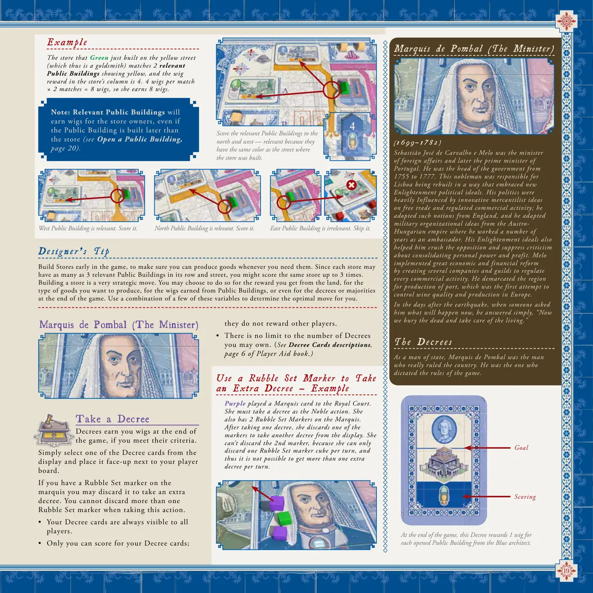
📝 第 19 页 AI 机翻对照（点击展开）
设计师提示
在游戏早期建造商店，以确保你能在需要时生产商品。由于每家商店在其所在街道和行中可能有多达3座相关的公共建筑，你可能会对同一家商店计分多达3次。建造商店是一项非常战略性的行动。你可以选择为了从土地获得的奖励、想要生产的商品类型、从公共建筑获得的假发，甚至是游戏结束时的法令或多数优势而这样做。结合使用这些变量中的几个来确定你的最佳行动。
庞巴尔侯爵（部长）
（1699-1782）
塞巴斯蒂昂·何塞·德·卡瓦略·梅洛是葡萄牙外交部长，后来成为首相。他从1755年到1777年担任政府首脑。这位贵族负责里斯本的重建，重建方式体现了新的启蒙政治理念。他的政治思想深受创新的重商主义思想影响，包括自由贸易和受监管的商业活动；他从英国采纳了这些理念，并从他作为大使工作多年的奥匈帝国借鉴了军事组织理念。他的启蒙理想也帮助他粉碎了反对派，并压制了关于巩固个人权力和牟利的批评。梅洛通过创建多家公司和行会来规范每项商业活动，实施了重大的经济和金融改革。他为波特酒的生产划定了区域，这是欧洲首次尝试控制葡萄酒质量和生产。
地震后，当有人问他接下来会发生什么时，他简单地回答道："现在我们埋葬死者，照顾生者。"
法令
作为国家元首，庞巴尔侯爵是真正统治国家的人。他就是制定游戏规则的人。
目标
计分
对商店所在街道的北侧和西侧相关的公共建筑进行计分——之所以相关，是因为它们与商店建造的街道颜色相同。
示例
绿色玩家刚刚在黄色街道上建造的商店（因此是金匠店）与2座显示黄色的相关公共建筑相匹配，且商店所在列的假发奖励是4。每匹配获得4个假发 × 2次匹配 = 8个假发，因此她获得8个假发。
注意：相关的公共建筑将为商店所有者赚取假发，即使公共建筑是在商店之后建造的（参见"开放一座公共建筑"，第20页）。
庞巴尔侯爵（部长）
获得一张法令
如果你满足法令的标准，它们将在游戏结束时为你赚取假发。只需从展示中选择一张法令卡，并将其面朝上放置在你的玩家板旁边。
如果你在大人物上有碎石集标记，你可以弃掉它来获得一张额外的法令。你执行此行动时不能弃掉超过一个碎石集标记。
• 你的法令卡对所有玩家始终可见。
• 只有你可以为你的法令卡计分；它们不会奖励其他玩家。
• 你拥有的法令数量没有限制。（参见法令卡描述，玩家辅助手册第6页。）
使用碎石集标记来获得额外法令 _ 示例
紫色玩家将一张大人物卡牌放置到皇家宫廷。她必须作为贵族行动获得一张法令。她在大人物上有2个碎石集标记。在获得一张法令后，她弃掉一个标记来从展示区获得另一张法令。她不能弃掉第二个标记，因为她每回合只能弃掉一个碎石集标记骰子，因此每回合不可能获得超过一张额外法令。
在游戏结束时，这张法令会为蓝色建筑师每张已开放的公共建筑奖励1个假发。西公共建筑相关。计分。北公共建筑相关。计分。东公共建筑不相关。跳过。
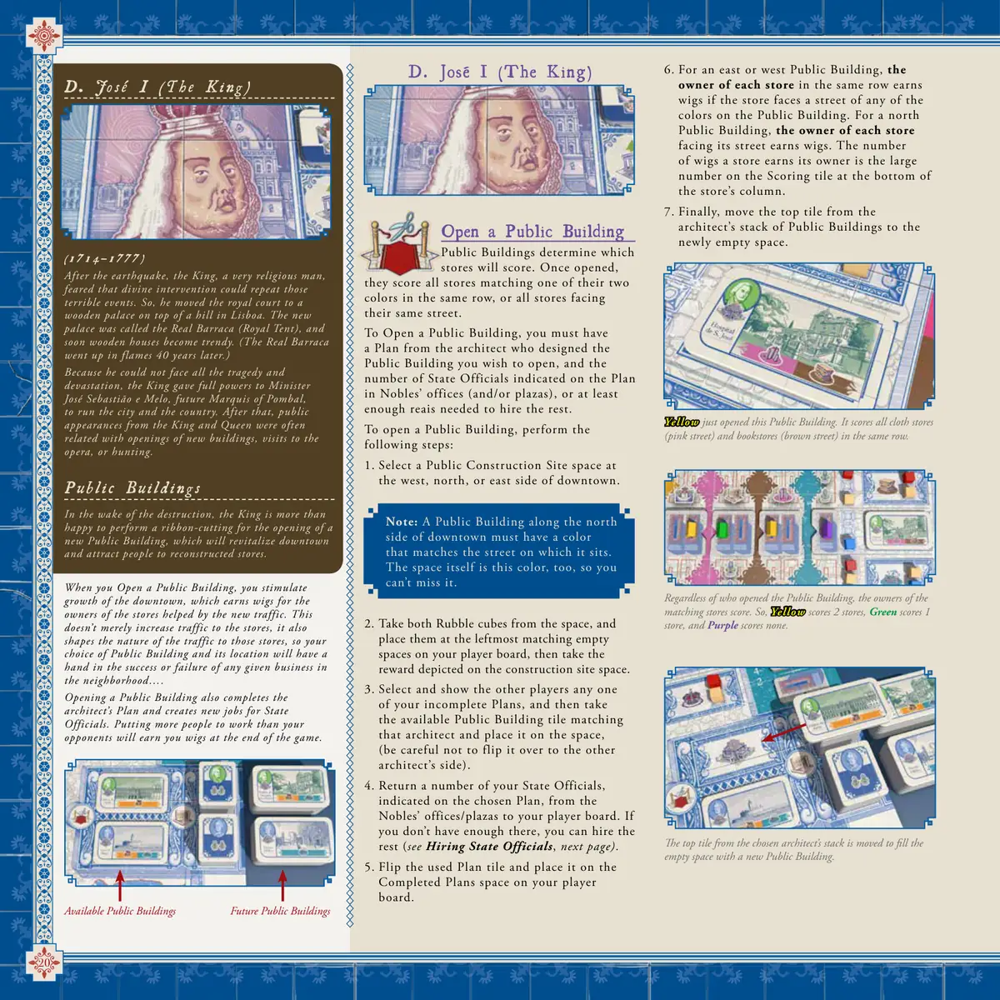
📝 第 20 页 AI 机翻对照（点击展开）
从选定的建筑师牌堆顶部的板块被移动，用一个新的公共建筑填补空位。
无论谁开启了这栋公共建筑，匹配商店的所有者都会得分。因此，黄色玩家得2家商店，绿色玩家得1家商店，紫色玩家得0家商店。
黄色玩家刚刚开启了这栋公共建筑。它为同一行中的所有布料商店（粉色街道）和书店（棕色街道）得分。
D. 何塞一世（国王）
开启一栋公共建筑
公共建筑决定哪些商店会得分。一旦开启，它们会为同一行中匹配其两种颜色之一的所有商店，或面向其同一条街道的所有商店得分。
要开启一栋公共建筑，你必须拥有由你想要开启的公共建筑的建筑师设计的计划，并在贵族办公室（和/或广场）中拥有计划上标示数量的国家官员，或者至少有足够的雷亚尔来雇佣其余部分。
要开启一栋公共建筑，执行以下步骤：
1. 选择市中心西侧、北侧或东侧的一个公共建筑工地空间。
注意：沿市中心北侧的公共建筑必须具有与其所在街道相匹配的颜色。空间本身也是这种颜色，所以你不会错过它。
2. 从该空间取走两块碎石立方体，并将它们放置在你的玩家板上最左侧的匹配空位上，然后取走建筑工地空间上所示的奖励。
3. 选择并向其他玩家展示你未完成的任何一张计划，然后取走可用的匹配该建筑师的公共建筑板块，并将其放置在该空间上（注意不要将其翻转到另一面建筑师的一侧）。
4. 将选定的计划上标示数量的国家官员从贵族办公室/广场返回到你的玩家板上。如果你在那里没有足够的数量，你可以雇佣其余部分（见雇佣国家官员，下一页）。
5. 将使用过的计划板块翻转，并放置在你的玩家板上的已完成计划空间上。
6. 对于东侧或西侧的公共建筑，如果商店面向公共建筑上任何颜色之一的街道，同一行中每家商店的所有者都会获得假发。对于北侧的公共建筑，面向其街道的每家商店的所有者都会获得假发。商店为其所有者获得的假发数量是商店所在列底部的计分板块上的大数字。
7. 最后，将建筑师牌堆顶部的板块移动到新空出的空间上。
D. 何塞一世（国王）
(17 14_ 17 77 )
地震后，国王，一个非常虔诚的人，担心神圣的干预可能会重演那些可怕的事件。因此，他将皇家宫廷迁到了里斯本一座山顶上的木制宫殿。新的
宫殿被称为皇家帐篷（Real Barraca），很快木质房屋变得流行。（皇家帐篷在40年后化为灰烬。）
由于无法面对所有的悲剧和毁灭，国王将全部权力授予了若泽·塞巴斯蒂昂·梅洛（José Sebastião e Melo）大臣，未来的庞巴尔侯爵，让他管理城市和国家。此后，国王和王后的公开露面通常与新建建筑的落成、参观歌剧或狩猎活动有关。
公共建筑
在毁灭之后，国王非常乐意为新公共建筑的落成剪彩，这将复兴市中心并吸引人们到重建的商店。
当你开放一座公共建筑时，你会刺激市中心的发展，这为得益于新增客流量的商店所有者赚取假发。这不仅增加了商店的客流量，还塑造了前往这些商店的客流性质，因此你对公共建筑及其位置的选择将有助于决定该地区任何特定企业的成功或失败……
开放公共建筑也完成了建筑师的计划，并为国家官员创造了新的就业机会。比你的对手雇佣更多的人将在游戏结束时为你赚取假发。
可用的公共建筑
未来的公共建筑
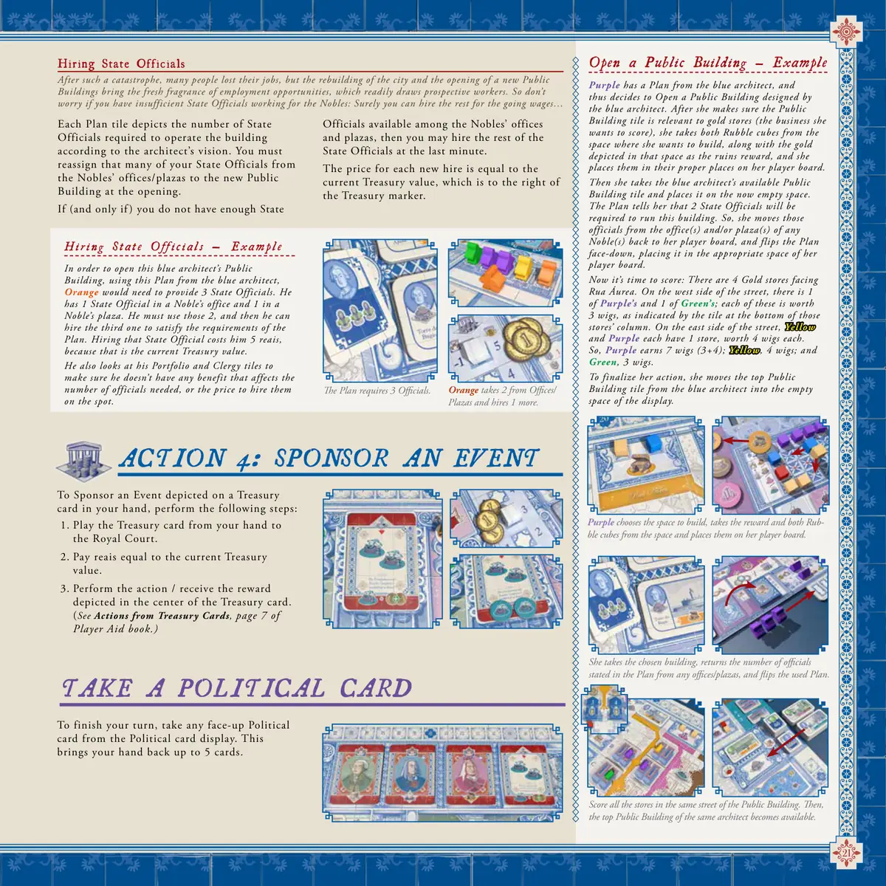
📝 第 21 页 AI 机翻对照（点击展开）
开启一座公共建筑 _ 示例
紫色玩家拥有来自蓝色建筑师的方案，因此决定开启一座由蓝色建筑师设计的公共建筑。在确认公共建筑板块与金店（她想计分的业务）相关后，她从想要建造的空间中取出两块碎石立方体，连同该空间中描绘的金子作为废墟奖励，并将它们放置在她的玩家板上相应的位置。然后她取用蓝色建筑师可用的公共建筑板块，并将其放置在现在空出的空间上。
方案告诉她需要2名政府官员来运营这座建筑。因此，她将那些官员从任意贵族的办公室和/或广场移回自己的玩家板，并将方案面朝下翻转，放置在她的玩家板上的相应空间中。
现在到了计分时间：有4家金店面向Rua Áurea街道。在西侧，有紫色和绿色玩家各1家；每家价值3顶假发，如这些商店所在列底部的板块所示。在街道东侧，黄色和紫色玩家各有1家商店，每家价值4顶假发。因此，紫色玩家获得7顶假发（3+4）；黄色玩家获得4顶假发；绿色玩家获得3顶假发。
为了完成她的行动，她将蓝色建筑师公共建筑板块堆顶的板块移至展示区的空位。
紫色玩家选择建造空间，从该空间取走奖励和两块碎石立方体，并将它们放在她的玩家板上。计分同一街道上的所有商店。然后，同一位建筑师的顶部公共建筑变为可用。她取走选中的建筑，根据方案要求从任意办公室/广场归还指定数量的官员，并使用过的方案翻转。
雇佣政府官员
在这样的灾难之后，许多人失去了工作，但城市的重建和新公共建筑的开放带来了就业机会的清新气息，这 readily 吸引了潜在的工人。所以，如果你为贵族工作的政府官员不足，不必担心：你肯定可以按现行工资雇佣其余的官员...
雇佣政府官员 _ 示例
为了开启这座蓝色建筑师的公共建筑，使用来自蓝色建筑师的这个方案，橙色玩家需要提供3名政府官员。他在一位贵族的办公室里有1名政府官员，在一位贵族的广场里有1名。他必须使用这2名，然后可以雇佣第3名来满足方案的要求。雇佣那名政府官员花费他5雷亚尔，因为这是当前的国库价值。
他还查看他的投资组合和教士板块，确保他没有任何影响所需官员数量或雇佣价格的福利。
即时。
每个计划板块(Plan tile)描绘了根据建筑师愿景运营该建筑所需的国家官员数量。在开放时，你必须将相应数量的国家官员从贵族办公室/广场重新分配到新的公共建筑。
如果（且仅当）你在贵族办公室和广场中没有足够的国家官员可用，那么你可以在最后一刻雇佣其余的国家官员。
每个新雇佣的价格等于当前国库(Treasury)的价值，即国库标记右侧的数值。
行动4：赞助一个事件
获取一张政治卡牌
要赞助你手中国库卡牌(Treasury card)上描绘的事件，请执行以下步骤：
1. 将你手中的国库卡牌打出并放置到宫廷(Royal Court)。
2. 支付等于当前国库价值的雷亚尔(reais)。
3. 执行国库卡牌中央描绘的行动/获得奖励。
（参见国库卡牌的行动，见玩家辅助手册第7页。）
结束你的回合时，从政治卡牌展示区(Political card display)中拿取任意一张正面朝上的政治卡牌。这会使你的手牌数量恢复到5张。
该计划需要3名官员。橙色玩家从办公室/广场调用了2名，并额外雇佣了1名。
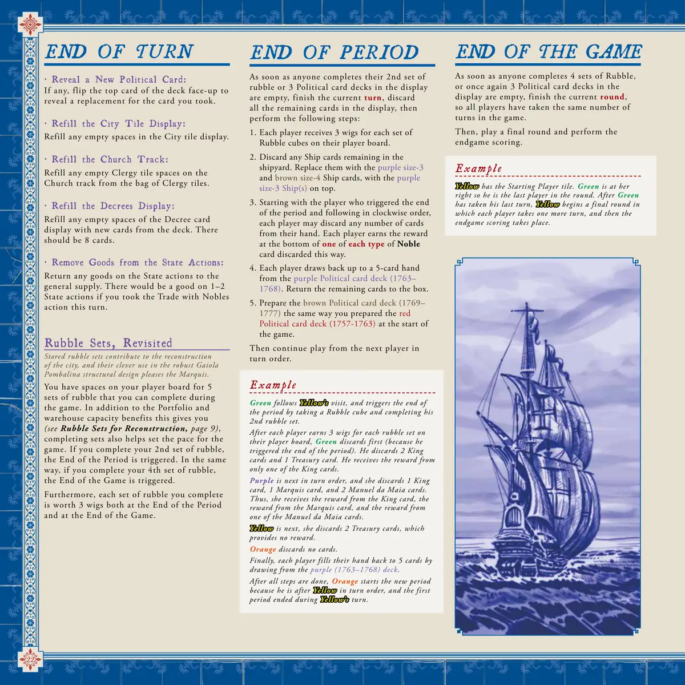
📝 第 22 页 AI 机翻对照（点击展开）
游戏结束
一旦任何人完成了4套碎石，
或者展示区中的3张政治牌牌库再次变空，
完成当前回合，
这样所有玩家在游戏中都进行了相同数量的回合。
然后，进行最后一回合并进行终局计分。
示 例
黄色玩家拥有起始玩家板块。绿色玩家在其右侧，因此他是本回合的最后一位玩家。在绿色玩家完成他的最后一回合后，黄色玩家开始一个新回合，每位玩家再进行一次回合，然后进行终局计分。
时期结束
一旦任何人完成了他的第2套碎石，或者展示区中的3张政治牌牌库变空，完成当前回合，弃置展示区中所有剩余的卡牌，然后执行以下步骤：
- 每位玩家根据其玩家板块上的每套碎石立方体获得3顶假发。
2. 弃置船坞中剩余的所有船只卡牌。用紫色3级和棕色4级船只卡牌替换它们，紫色3级船只卡牌放在最上面。
3. 从触发时期结束的玩家开始，按顺时针顺序，每位玩家可以弃置手牌中任意数量的卡牌。每位玩家获得以此方式弃置的每种贵族卡牌底部的奖励。
- 每位玩家从紫色政治牌牌库（1763-1768）摸牌，使手牌数量回到最多5张。将剩余的卡牌放回盒中。
- 以与游戏开始时准备红色政治牌牌库（1757-1763）相同的方式准备棕色政治牌牌库（1769-1777）。
然后从下一个玩家开始继续游戏。
示 例
绿色玩家跟随黄色玩家的访问，并通过获取一个碎石立方体并完成他的第2套碎石来触发时期结束。
每位玩家根据其玩家板块上的每套碎石获得3顶假发后，绿色玩家首先弃牌（因为他触发了时期结束）。他弃置了2张国王卡和1张国库卡。他只从其中一张国王卡获得奖励。
紫色玩家是下一个按顺序的玩家，她弃置了1张国王卡、1张侯爵卡和2张曼努埃尔·达·马亚卡。因此，她获得了国王卡的奖励、侯爵卡的奖励以及其中一张曼努埃尔·达·马亚卡的奖励。
黄色玩家是下一个，她弃置了2张国库卡，这没有提供奖励。
橙色玩家没有弃置任何卡牌。
最后，每位玩家通过从紫色（1763-1768）牌库摸牌使手牌数量回到5张。
所有步骤完成后，橙色玩家开始新时期，因为他在回合顺序中位于黄色玩家之后，而第一个时期在黄色玩家的回合期间结束。
回合结束
• 揭示一张新的政治卡：
如果有的话，将牌库顶部的卡牌翻面朝上，以揭示你拿走的卡牌的替代卡。
• 补充城市板块展示：
补充城市板块展示中任何空缺的位置。
• 补充教堂轨道：
从教士板块袋中补充教堂轨道上任何空缺的教士板块位置。
• 补充法令展示：
从牌库中用新的卡牌补充法令卡牌展示中任何空缺的位置。应该有8张卡牌。
• 从国家行动中移除货物：
将国家行动上的任何货物归还到通用供应区。如果你在本回合执行了与贵族贸易行动，那么1-2个国家行动上会有一个货物。
碎石组，再探
储存的碎石组有助于城市的重建，它们在坚固的加约拉·庞巴利纳结构设计中的巧妙使用令侯爵满意。
你的玩家板上有5个位置，用于存放你在游戏过程中可以完成的碎石组。除了这给你带来的投资组合和仓库容量益处（参见用于重建的碎石组，第9页）外，完成碎石组也有助于设定游戏的节奏。如果你完成了你的第2个碎石组，则触发时期结束。同样，如果你完成了你的第4个碎石组，则触发游戏结束。
此外，每个你完成的碎石组在时期结束时和游戏结束时都值3个假发。
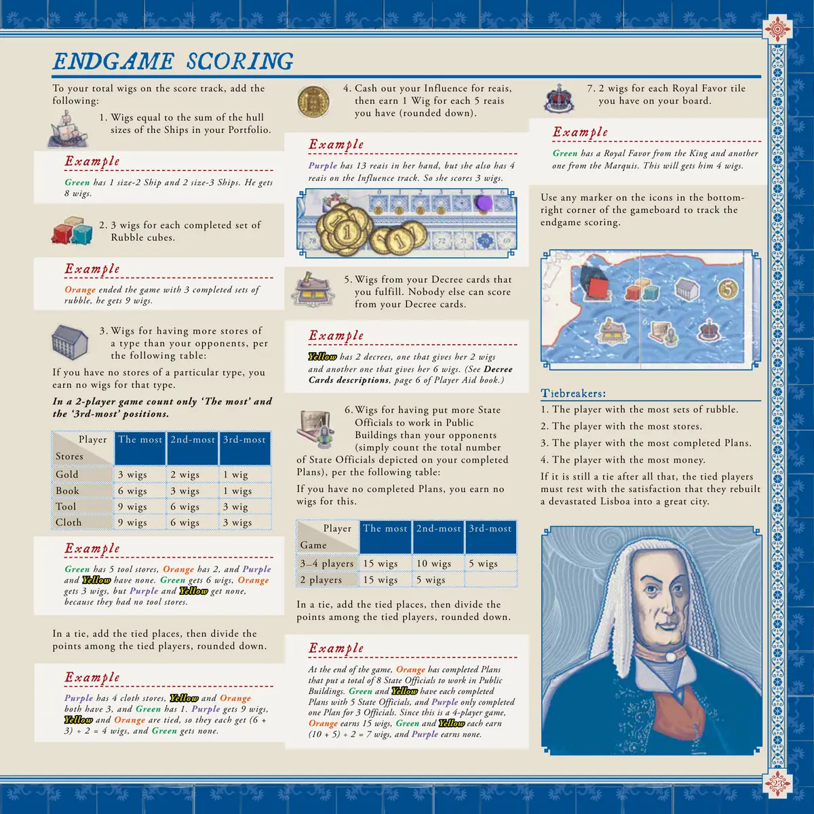
📝 第 23 页 AI 机翻对照（点击展开）
在你的分数轨道上，加上以下假发：
1. 等于你投资组合中船只船体大小总和的假发。
示 例
绿色有1艘尺寸2的船和2艘尺寸3的船。他获得8个假发。
- 每完成一组碎石立方体获得3个假发。
示 例
橙色在游戏结束时完成了3组碎石，他获得9个假发。
3. 根据下表，如果你拥有某种类型的商店比对手多，则获得相应假发：
如果你没有某种类型的商店，则在该类型上不获得假发。
在2人游戏中，只计算"最多"和"第三多"的位置。
示 例
绿色有5家工具商店，橙色有2家，紫色和黄色都没有。绿色获得6个假发，橙色获得3个假发，但紫色和黄色没有获得，因为他们没有工具商店。
平局时，将并列的名次相加，然后除以并列的玩家数，向下取整。
示 例
紫色有4家布料商店，黄色和橙色各有3家，绿色有1家。紫色获得9个假发，黄色和橙色并列，所以他们各获得(6 + 3) ÷ 2 = 4个假发，绿色没有获得。
4. 将你的影响力兑换为雷亚尔，然后每5雷亚尔获得1个假发（向下取整）。
示 例
紫色手中有13雷亚尔，但她的影响力轨道上还有4雷亚尔。所以她获得3个假发。
5. 从你完成的法令卡中获得假发。其他人不能从你的法令卡上得分。
示 例
黄色有2张法令卡，一张给她2个假发，另一张给她6个假发。（参见法令卡描述，玩家辅助手册第6页。）
6. 根据下表，如果你在公共建筑中安排的政府官员比对手多（只需计算你已完成计划上描绘的政府官员总数），则获得相应假发：
如果你没有完成的计划，则在此项上不获得假发。
平局时，将并列的名次相加，然后除以并列的玩家数，向下取整。
示 例
游戏结束时，橙色有已完成计划，总共在公共建筑中安排了8名政府官员。绿色和黄色各有已完成计划，安排了5名政府官员，紫色只完成了一个计划，安排了3名官员。由于这是4人游戏，橙色获得15个假发，绿色和黄色各获得(10 + 5) ÷ 2 = 7个假发，紫色没有获得。
结算得分
玩家
商店
最多
第二多 第三多
黄金
3个假发
2个假发
1个假发
书籍
6个假发
3个假发
1个假发
工具
9个假发
6个假发
3个假发
布料
9个假发
6个假发
3个假发
玩家
游戏
最多
第二多 第三多
3-4人
15个假发
10个假发
5个假发
2人
15个假发
5个假发
- 每块你版图上的皇家恩惠板块获得2个假发。
示 例
绿色有一张来自国王的皇家恩惠，还有另一张
来自侯爵的一张。这会让他获得4顶假发。
使用版图右下角图标上的任何指示物来追踪终局计分。
平局决胜条件：
- 拥有最多碎石套的玩家。
- 拥有最多商店的玩家。
- 拥有最多完成计划的玩家。
- 拥有最多金钱的玩家。
如果所有条件后仍然平局，那么平局的玩家可以带着满足感休息，因为他们将一片废墟里斯本重建为一座伟大的城市。
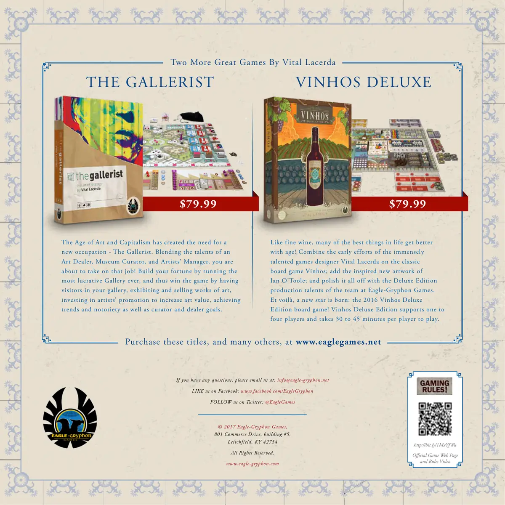
📝 第 24 页 AI 机翻对照（点击展开）
艺术与资本主义时代创造了一种新职业的需求——美术馆馆长(Art Dealer)。融合了艺术品经销商、博物馆策展人和艺术家经纪人的才能，你即将承担这份工作！通过经营最赚钱的美术馆来积累你的财富，并通过让访客参观你的美术馆、展览和销售艺术品、投资艺术家推广以提高艺术品价值、实现趋势和知名度以及达成策展人和经销商目标来赢得游戏。
如同美酒，生活中的许多美好事物会随着岁月而变得更加醇厚！结合天才游戏设计师维塔尔·拉塞尔达(Vital Lacerda)在经典桌游Vinhos中的早期努力；添加伊恩·奥图尔(Ian O'Toole)富有灵感的新艺术作品；并由鹰狮游戏(Eagle-Gryphon Games)团队的豪华版制作技艺进行打磨。瞧，一颗新星诞生了：2016年Vinhos豪华版桌游！Vinhos豪华版支持一到四名玩家，每名玩家的游戏时间为30至45分钟。
美术馆馆长
VINHOS豪华版
如有任何问题，请通过以下邮箱联系我们：info@eagle-gryphon.net
在Facebook上关注我们：www.facebook com/EagleGryphon
在Twitter上关注我们：@EagleGames
© 2017 Eagle-Gryphon Games,
801 Commerce Drive, building #5,
Leitchfield, KY 42754
保留所有权利。
http://bit.ly/1MxYfWu
官方游戏网页
和规则视频
维塔尔·拉塞尔达的其他两款精彩游戏
在www.eaglegames.net购买这些标题及其他许多游戏
$79.99
$79.99
www.eagle-gryphon.com